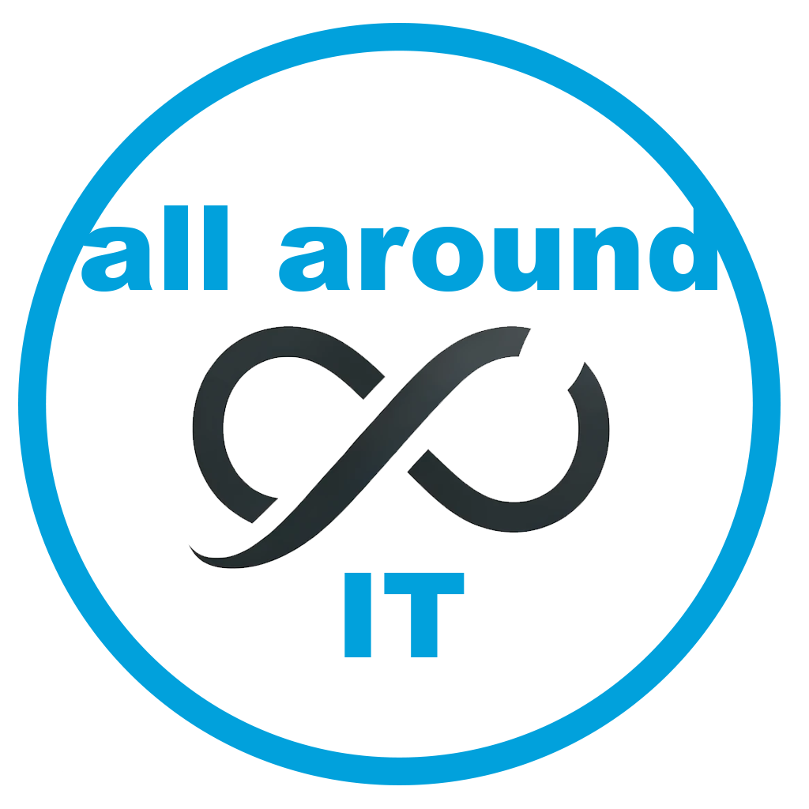

<!DOCTYPE html>
<html lang="de">
<head>
    <meta charset="UTF-8">
    <meta name="viewport" content="width=device-width, initial-scale=1.0">
    <title>all around IT Wiki</title>
    <script src="https://cdn.tailwindcss.com"></script>
    <script>
        tailwind.config = {
            darkMode: 'class'
        };
    </script>
    <script src="https://unpkg.com/lucide@latest"></script>
    <style>
        @import url('https://fonts.googleapis.com/css2?family=Inter:wght@300;400;500;600;700;800;900&display=swap');
        body { font-family: 'Inter', sans-serif; }
        .custom-scrollbar::-webkit-scrollbar { width: 6px; }
        .custom-scrollbar::-webkit-scrollbar-track { background: transparent; }
        .custom-scrollbar::-webkit-scrollbar-thumb { background: #e2e8f0; border-radius: 10px; }
        .custom-scrollbar::-webkit-scrollbar-thumb:hover { background: #cbd5e1; }
        .dark .custom-scrollbar::-webkit-scrollbar-thumb { background: #334155; }
        .dark .custom-scrollbar::-webkit-scrollbar-thumb:hover { background: #475569; }
        
        /* Animation Classes */
        @keyframes fadeIn { from { opacity: 0; } to { opacity: 1; } }
        @keyframes slideInUp { from { opacity: 0; transform: translateY(10px); } to { opacity: 1; transform: translateY(0); } }
        @keyframes zoomIn { from { opacity: 0; transform: scale(0.95); } to { opacity: 1; transform: scale(1); } }
        @keyframes bounce { 0%, 100% { transform: translateY(-25%); animation-timing-function: cubic-bezier(0.8,0,1,1); } 50% { transform: none; animation-timing-function: cubic-bezier(0,0,0.2,1); } }
        
        .animate-fade-in { animation: fadeIn 0.3s ease-out forwards; }
        .animate-slide-in { animation: slideInUp 0.4s forwards; }
        .animate-zoom-in { animation: zoomIn 0.3s ease-out forwards; }
        .animate-bounce-custom { animation: bounce 1s infinite; }
    </style>
</head>
<body class="bg-slate-50 dark:bg-slate-900 text-slate-900 dark:text-slate-100 flex font-sans h-screen w-full overflow-hidden relative transition-colors duration-300">

    <!-- Mobile Menu Toggle Button -->
    <button id="mobile-toggle" onclick="app.toggleSidebar();" class="fixed bottom-6 left-6 z-50 p-4 bg-indigo-600 text-white rounded-full shadow-lg md:hidden hidden">
        <i data-lucide="menu" class="w-6 h-6"></i>
    </button>

    <!-- Sidebar Overlay (Mobile) -->
    <div id="sidebar-overlay" onclick="app.closeSidebar();" class="fixed inset-0 bg-slate-900/50 z-30 hidden md:hidden transition-opacity opacity-0"></div>

    <!-- Sidebar -->
    <aside id="sidebar" class="h-screen fixed inset-y-0 left-0 z-40 w-72 bg-white dark:bg-slate-800 border-r border-slate-200 dark:border-slate-700 transform -translate-x-full md:relative md:translate-x-0 transition-transform duration-300 flex flex-col flex-shrink-0">
        
        <!-- Sidebar Header -->
        <div class="p-6 pb-4 shrink-0 border-b border-slate-100 dark:border-slate-700">
            <div class="flex items-center justify-between">
                <div class="flex items-center gap-3">
                   <div class="w-12 h-12 flex-shrink-0">
                      
                   </div>
                   <div>
                      <h1 class="font-bold text-lg leading-tight dark:text-white">all around <span class="text-indigo-600 dark:text-indigo-400 block italic">IT Wiki</span></h1>
                      <p class="text-[10px] text-slate-400 dark:text-slate-500 uppercase tracking-widest font-bold">Sales Edition</p>
                   </div>
                </div>
                <button onclick="app.closeSidebar();" class="md:hidden text-slate-400 hover:bg-slate-100 dark:hover:bg-slate-700 p-2 rounded-lg">
                    <i data-lucide="x" class="w-5 h-5"></i>
                </button>
            </div>
        </div>

        <!-- Main Navigation (Scrollbar) -->
        <div class="flex-1 overflow-y-auto px-6 py-6 custom-scrollbar flex flex-col" id="sidebar-nav-container">
            <!-- Navigation wird von JS gerendert -->
        </div>

    </aside>

    <!-- Main Content -->
    <main class="flex-1 flex flex-col h-screen overflow-hidden relative">
        <!-- Header -->
        <header id="main-header" class="h-20 bg-white dark:bg-slate-800 border-b border-slate-200 dark:border-slate-700 flex items-center px-4 md:px-8 shadow-sm z-10 shrink-0 transition-colors duration-300">
            <div class="w-full flex items-center justify-between gap-2 md:gap-4">
                
                <!-- Search Input -->
                <div class="relative flex-1 max-w-2xl">
                    <i data-lucide="search" class="absolute left-4 top-1/2 -translate-y-1/2 text-slate-400 w-[18px] h-[18px]"></i>
                    <input 
                        type="text" 
                        id="search-input"
                        placeholder="Hardware-Begriff suchen..." 
                        oninput="app.handleSearch(this.value);"
                        class="w-full pl-12 pr-4 py-3 bg-slate-100 dark:bg-slate-900/50 border-none rounded-2xl text-sm focus:ring-2 focus:ring-indigo-500 focus:bg-white dark:focus:bg-slate-900 text-slate-900 dark:text-slate-100 placeholder:text-slate-400 dark:placeholder:text-slate-500 transition-all outline-none"
                    >
                </div>
                
                <!-- Top Right Actions -->
                <div class="flex items-center gap-2 shrink-0 ml-auto">
                    
                    <!-- Favoriten Button -->
                    <button onclick="app.handleNavigate('favoriten');" title="Meine Favoriten" class="p-3 rounded-2xl bg-slate-100 dark:bg-slate-900/50 text-slate-500 dark:text-slate-400 hover:text-amber-500 dark:hover:text-amber-400 hover:bg-slate-200 dark:hover:bg-slate-700 transition-colors flex items-center justify-center">
                        <i data-lucide="star" class="w-5 h-5"></i>
                    </button>

                    <!-- Dark Mode Toggle -->
                    <button onclick="app.toggleDarkMode();" title="Dark Mode umschalten" class="p-3 rounded-2xl bg-slate-100 dark:bg-slate-900/50 text-slate-500 dark:text-slate-400 hover:text-indigo-600 dark:hover:text-indigo-400 hover:bg-slate-200 dark:hover:bg-slate-700 transition-colors flex items-center justify-center">
                        <i data-lucide="moon" class="w-5 h-5 block dark:hidden"></i>
                        <i data-lucide="sun" class="w-5 h-5 hidden dark:block"></i>
                    </button>
                </div>
            </div>
        </header>

        <!-- Content Area -->
        <section id="content-area" class="flex-1 overflow-y-auto p-4 md:p-8 custom-scrollbar scroll-smooth">
            <div id="view-container" class="max-w-4xl mx-auto">
                <!-- Rendered by JS -->
            </div>
        </section>
    </main>

    <script>
        // --- DATA ---
        const WIKI_DATA = [
            // --- DOKUMENTATION ---
            { id: "doku_uebersicht", title: "Projekt-Doku: Übersicht", category: "sprint_berichte", definition: "Zentrale Übersicht über das IT-Wiki-Projekt und dessen Entwicklungsziele.", content: "<h3 class=\"text-xl font-bold text-slate-800 dark:text-slate-100 mb-4\">Scrum Ablauf</h3>\n\n\nDieses IT-Wiki wurde als interaktives Nachschlagewerk für unser Vertriebsteam entwickelt.\n\n**Kernziele des Projekts:**\n- Schneller Zugriff auf fundiertes Hardware-Wissen während Kundengesprächen.\n- Bereitstellung einheitlicher, nutzenorientierter Verkaufsargumente (Pitches).\n- Strukturierte Erklärung durch das EVA-S Prinzip.\n\nIn diesem Dokumentationsbereich finden Sie alle Protokolle zu den Entwicklungs-Sprints und Retrospektiven, um den Fortschritt nachvollziehen zu können.\n\n<h3 class=\"text-xl font-bold text-slate-800 dark:text-slate-100 mb-4 mt-10\">Rollenverteilung</h3><div class=\"overflow-x-auto rounded-xl border border-slate-200 dark:border-slate-700 bg-white dark:bg-slate-800\"><table class=\"w-full text-left border-collapse text-sm\"><thead class=\"bg-slate-800 dark:bg-slate-900 text-white\"><tr><th class=\"p-4 font-black\">ROLLE</th><th class=\"p-4 font-black\">NAME</th><th class=\"p-4 font-black\">AUFGABEN</th></tr></thead><tbody class=\"text-slate-700 dark:text-slate-300\"><tr class=\"border-b border-slate-100 dark:border-slate-700\"><td class=\"p-4 font-bold\">PRODUCT OWNER</td><td class=\"p-4\">Malin</td><td class=\"p-4\">Anforderungen sammeln, Prioritäten festlegen</td></tr><tr class=\"border-b border-slate-100 dark:border-slate-700\"><td class=\"p-4 font-bold\">SCRUM MASTER</td><td class=\"p-4\">Nico</td><td class=\"p-4\">Achtet auf SCRUM-Ablauf, moderiert Dailys</td></tr><tr class=\"border-b border-slate-100 dark:border-slate-700\"><td class=\"p-4 font-bold\">ENTWICKLUNGSTEAM</td><td class=\"p-4\">Erza, Nico, Malin, Kasija</td><td class=\"p-4\">Inhalte erarbeiten (Hardware, EVA usw.)</td></tr><tr class=\"border-b border-slate-100 dark:border-slate-700\"><td class=\"p-4 font-bold\">DOKUMENTATION</td><td class=\"p-4\">Erza, Malin</td><td class=\"p-4\">Pflegt die Wissensdatenbank, Pflegt das Word Dokument</td></tr><tr><td class=\"p-4 font-bold\">QUALITÄTSSICHERUNG</td><td class=\"p-4\">Erza, Kasija</td><td class=\"p-4\">Prüft Verständlichkeit & Vollständigkeit</td></tr></tbody></table></div>", alltagsbeispiel: "Eine transparente Dokumentation ist wie ein sauber geführtes Fahrtenbuch. Jeder neue Kollege sieht sofort, welche Wartungen am Projekt vorgenommen wurden und wer den Schlüssel hat.", related: ["sprint1", "sprint2"], tags: ["Projekt", "Übersicht"] },
            { id: "sprint1", title: "Dokumentation: Sprint 1", category: "sprint_berichte", definition: "Zeitraum: Projektbeginn bis 30.04.2026. Fokus: Grundstruktur und Kernkonzepte.", content: "Im ersten Sprint haben wir die Basis für die Wissensdatenbank geschaffen.\n\n**Erreichte Meilensteine:**\n- Festlegung des **EVA-S Prinzips** als Navigationsstruktur.\n- Erstellung des **Glossars** mit allen geforderten Fachbegriffen.\n- Entwicklung der **Büro-Analogie** zur Erklärung komplexer Hardware-Vorgänge.\n- Implementierung der **Suchfunktion** und des interaktiven Designs.\n\n**Sprint-Retrospektive**\n\n**Was lief gut?**\n- Die Zusammenarbeit im Team hat sehr gut funktioniert. Aufgaben wurden zuverlässig bearbeitet und im Team abgestimmt.\n- Das Kanban-Board hat dabei geholfen, den Überblick über den aktuellen Stand der Aufgaben zu behalten.\n- Auch die Umsetzung als Website ist gut gelungen und die Inhalte konnten verständlich dargestellt werden.\n\n**Was lief nicht optimal?**\n- Im Projektverlauf hat sich die ursprüngliche Planung leicht verändert, da sich die Umsetzungsform angepasst hat.\n- Dadurch mussten einige Aufgaben neu priorisiert und teilweise überarbeitet werden.\n\n**Was können wir verbessern?**\n- Die Aufgaben können noch etwas klarer priorisiert werden, um schneller zu erkennen, was aktuell am wichtigsten ist.\n- Außerdem könnten Änderungen im Projekt noch früher abgestimmt werden, um den Arbeitsfluss weiter zu verbessern.", alltagsbeispiel: "Sprint 1 ist wie das Gießen des Fundaments beim Hausbau. Das Haus steht noch nicht, aber der Grundriss ist fest verankert.", related: ["EVA-Prinzip", "Sprint 2"], tags: ["SCRUM", "Sprint 1"] },
            { id: "sprint2", title: "Dokumentation: Sprint 2", category: "sprint_berichte", definition: "Zeitraum: 01.05.2026 bis 21.05.2026. Fokus: Detailtiefe und Finalisierung.", content: "Der zweite Sprint dient der inhaltlichen Vertiefung und dem Feinschliff.\n\n**Geplante Aufgaben:**\n- Detaillierte Beschreibung von **Spezial-Hardware** (z.B. Plotter, Workstations).\n- Ausarbeitung technischer **Schnittstellen** (HDMI 2.1 vs DisplayPort 1.4).\n- Abschlusspräsentation und Projektabgabe am **21.05.2026**.", alltagsbeispiel: "In Sprint 2 wird der Innenausbau gemacht. Das Haus (die App) steht, jetzt kommen die Möbel (die Inhalte) hinein, damit man darin leben kann.", related: ["Sprint 1"], tags: ["SCRUM", "Sprint 2"] },

            // --- GRUNDLAGEN ---
            { id: "eva_konzept", title: "Das EVA-Prinzip (Einstieg)", category: "eva_uebersicht", definition: "Das **EVA-Prinzip** ist das Fundament der IT: **E**ingabe, **V**erarbeitung, **A**usgabe.", content: "Jeder Computer der Welt, vom kleinen Smartphone bis zum riesigen Server, funktioniert im Kern exakt gleich. Man nennt das die Datenverarbeitungs-Kette:\n\n1. **Eingabe**: Ein Reiz von außen kommt herein. Das kann ein Klick auf die Maus sein, ein Wort auf der Tastatur oder ein Sprachbefehl. Ohne Eingabe wartet der Computer einfach.\n2. **Verarbeitung**: Der Computer nimmt diesen Reiz, übersetzt ihn in seine Sprache (Einsen und Nullen), rechnet damit und überlegt, was er tun soll.\n3. **Ausgabe**: Das Ergebnis wird so aufbereitet, dass wir Menschen es wieder verstehen können (z.B. als Bild auf dem Monitor oder als Ton aus dem Lautsprecher).\n\n**Vom EVA zum EVA-S**:\nDa wir heutzutage Ergebnisse nicht nur kurz sehen, sondern behalten wollen, wurde das Modell um das **S** für **Speicherung** erweitert.", alltagsbeispiel: "Wie ein Bäcker: Sie geben Mehl und Hefe in die Schüssel (Eingabe). Der Ofen backt den Teig (Verarbeitung) und liefert ein frisches Brot (Ausgabe). Wenn Sie Reste für morgen in die Brotbox legen, ist das die Speicherung.", related: ["Zentraleinheit", "Software", "Speicherung"], tags: ["Grundlagen", "Einstieg"] },
            { id: "hardware", title: "Hardware", category: "grundlagen", definition: "Die physischen, greifbaren Komponenten eines IT-Systems.", content: "Hardware ist **alles, was Sie anfassen, werfen oder fallen lassen können**. \n\nEs ist der grobe, materielle Körper der Maschine. Zum Körper gehören das Gehäuse, die Platinen, die Kabel, der Monitor, die Tastatur und die winzigen Mikrochips im Inneren. Ohne Software (dem Verstand) ist Hardware allerdings komplett dumm – sie ist einfach nur ein teurer Haufen Metall, Plastik und Silizium, der darauf wartet, Befehle zu bekommen.", alltagsbeispiel: "Hardware ist wie ein echtes, physisches Buch aus Papier und Pappe. Sie können es anfassen, in den Schrank stellen oder es aus Versehen kaputt machen.", related: ["Software", "Peripherie"], tags: ["Grundbegriff"] },
            { id: "software", title: "Software", category: "grundlagen", definition: "Sammelbegriff für Programme und Betriebssysteme.", content: "Software ist das genaue Gegenteil von Hardware: Sie ist **der Verstand, der Geist und das Wissen des Computers**. Software kann man nicht anfassen, sie existiert nur als Code aus Einsen und Nullen.\n\nEs gibt verschiedene Ebenen:\n- Das **Betriebssystem** (z.B. Windows) ist das Unterbewusstsein. Es regelt, wie das Herz (die CPU) schlägt.\n- Die **Anwendungsprogramme** (z.B. Word, Excel, das CRM-System) sind die konkreten Aufgaben, die wir erledigen wollen.\n\nHardware und Software müssen perfekt aufeinander abgestimmt sein.", alltagsbeispiel: "Wenn die Hardware das Buch aus Papier ist, dann ist die Software die erfundene Geschichte, die auf den Seiten steht. Ohne die Geschichte ist das Buch nur ein wertloser Haufen leeres Papier.", related: ["Hardware", "Kompatibilität"], tags: ["Programme", "Immateriell"] },
            { id: "zentraleinheit", title: "Zentraleinheit", category: "grundlagen", definition: "Der Kern des Computers, bestehend aus Gehäuse und allen internen lebenswichtigen Bauteilen.", content: "Die Zentraleinheit ist quasi **der Rumpf des Computers**. Wenn Sie einen klassischen Desktop-PC ansehen, dann ist der große 'Kasten', der oft unterm Tisch steht, die Zentraleinheit.\n\nIn diesem Kasten befinden sich alle lebenswichtigen Organe, die für die Informationsverarbeitung (Verarbeitung & Speicherung aus dem EVA-S Modell) zuständig sind:\n- Das Mainboard (das Skelett)\n- Der Prozessor (das Gehirn)\n- Der Arbeitsspeicher (der Kurzzeitspeicher)\n- Die SSD/HDD (das Langzeitgedächtnis)\n- Das Netzteil (die Stromversorgung)\n\nTastatur und Monitor gehören **nicht** zur Zentraleinheit, sie sind Peripherie.", alltagsbeispiel: "Die Zentraleinheit ist das nackte Auto (Motor, Chassis, Tank). Ohne Lenkrad (Tastatur) und Windschutzscheibe (Monitor) nützt es uns Menschen nichts, aber im Inneren ist es eine komplett funktionsfähige Maschine.", related: ["CPU", "Mainboard", "Hardware"], tags: ["Systemkern"] },
            { id: "betriebssystem", title: "Betriebssystem (OS)", category: "grundlagen", definition: "Die Basis-Software, ohne die kein Computer starten und laufen kann (z.B. Windows oder macOS).", content: "Das Betriebssystem (Operating System, OS) ist der **Chef-Manager und Übersetzer im Computer**.\n\nHardware (Platinen und Chips) versteht nur primitive elektrische Impulse. Ihre Anwendungen (Word, der Browser) wollen aber schöne Fenster und Klicks machen. Das Betriebssystem sitzt genau dazwischen. Es teilt den Programmen den Arbeitsspeicher zu, sagt der Festplatte, wo Daten liegen sollen, und kümmert sich um die Sicherheit.\n\nOhne Betriebssystem würden Sie beim Anschalten des PCs nur einen schwarzen Schirm mit etwas blinkendem Text sehen.", alltagsbeispiel: "Das Betriebssystem ist wie der Dirigent vor einem großen Orchester. Die Instrumente (Hardware) sind zwar da, aber ohne den Dirigenten, der genau den Takt vorgibt, würde nur ein ohrenbetäubender, chaotischer Lärm entstehen.", related: ["Software", "Kompatibilität"], tags: ["Basis", "Software"] },
            { id: "treiber", title: "Treiber (Driver)", category: "grundlagen", definition: "Eine spezialisierte Software, die Hardware für das Betriebssystem verständlich macht.", content: "Ein Treiber ist ein **digitaler Übersetzer**. \nWenn Sie einen neuen Drucker oder eine besondere Grafikkarte an den PC anschließen, weiß Windows von allein nicht, wie es diese Maschine bedienen soll. Der Hersteller der Hardware liefert deshalb einen Treiber mit. Dieser kleine Code erklärt dem Betriebssystem exakt, welche Funktionen das Gerät hat und wie man es ansteuert.\nFehlende oder veraltete Treiber sind die häufigste Ursache für stotternde Spiele, keinen Ton oder Geräte, die einfach nicht erkannt werden.", alltagsbeispiel: "Ein Treiber ist wie ein Dolmetscher bei einer Geschäftsreise. Er übersetzt live zwischen einem deutschen Manager (Betriebssystem) und einem chinesischen Fabrikanten (dem neuen Drucker), damit beide reibungslos zusammenarbeiten können.", related: ["Software", "Betriebssystem (OS)"], tags: ["Software", "System"] },
            { id: "bios", title: "BIOS / UEFI", category: "grundlagen", definition: "Die allererste Software, die beim Einschalten des Computers geladen wird, noch vor dem Windows.", content: "Das BIOS (Basic Input/Output System) oder sein moderner Nachfolger **UEFI** ist tief auf dem Mainboard in einem kleinen Chip verankert.\n\nSobald Sie den Power-Knopf drücken, wacht das BIOS auf und führt den sogenannten POST (Power-On Self-Test) durch. Es prüft im Bruchteil einer Sekunde: Ist der Arbeitsspeicher da? Läuft der Lüfter? Ist die Festplatte angeschlossen? Wenn alles okay ist, übergibt das BIOS den Staffelstab an das Betriebssystem (Windows), und der normale Startbildschirm erscheint.", alltagsbeispiel: "Das BIOS ist wie das Aufschließen des Ladengeschäfts am Morgen: Bevor der erste Kunde (das Windows) eintreten kann, macht der Chef das Licht an, prüft, ob die Kasse funktioniert, und schließt die Vordertür auf.", related: ["Mainboard", "Betriebssystem (OS)"], tags: ["Hardware", "Boot"] },
            { id: "algorithmus", title: "Algorithmus", category: "grundlagen", definition: "Eine exakte, schrittweise Handlungsvorschrift zur Lösung eines Problems.", content: "In der Informatik ist ein Algorithmus das Herzstück jeder Programmierung. Es ist keine Magie, sondern einfach eine **strenge Abfolge von Befehlen**.\n\nGoogle nutzt Algorithmen, um Suchergebnisse zu sortieren. Amazon nutzt Algorithmen, um herauszufinden, welches Produkt Sie als Nächstes kaufen wollen. Die Vorschrift lautet z.B.: '1. Nimm die Eingabe. 2. Prüfe Bedingung A. 3. Wenn wahr, tue X, sonst tue Y.'", alltagsbeispiel: "Ein Algorithmus ist nichts anderes als ein Kochrezept. Es sagt ganz exakt: Nimm 2 Eier, schlage sie in eine Schüssel, rühre 3 Minuten und stelle es dann für 20 Minuten in den Ofen. Weicht man davon ab, scheitert das Programm (der Kuchen).", related: ["Software"], tags: ["Logik", "Software"] },
            { id: "lizenz", title: "Lizenz (Freeware, Shareware, Vollversion)", category: "grundlagen", definition: "Die rechtliche Erlaubnis, eine Software nutzen zu dürfen.", content: "Software kann man sehr einfach kopieren, aber nicht immer legal nutzen. Die Lizenz regelt die Nutzungsrechte:\n- **Freeware**: Die Software ist dauerhaft und zu 100% kostenlos (z.B. der Firefox Browser).\n- **Shareware**: Sie dürfen die Software kurz testen (z.B. 30 Tage) oder nutzen eine eingeschränkte Version. Wenn sie Ihnen gefällt, müssen Sie bezahlen.\n- **Vollversion**: Sie kaufen das Programm einmalig oder mieten es (Abo-Modell / SaaS). Nur so erhalten Sie den vollen Funktionsumfang und Support.", alltagsbeispiel: "Eine Lizenz ist wie eine Monatskarte für den Bus. Sie besitzen den Bus (die Software) nicht, aber Sie haben sich legal das Recht erkauft, ihn für einen bestimmten Zeitraum nutzen zu dürfen.", related: ["Software", "Betriebssystem (OS)"], tags: ["Recht", "Software"] },
            { id: "ergonomie", title: "Ergonomie", category: "grundlagen", definition: "Die Wissenschaft, Arbeitsgeräte optimal an den menschlichen Körper und seine Gesundheit anzupassen.", content: "Ergonomie bedeutet, dass sich **die IT der Gesundheit des Menschen anpasst – und nicht umgekehrt**.\n\nWenn ein Mensch 8 Stunden täglich völlig starr auf einen Bildschirm starrt und kleine Klicks ausführt, rebelliert unser von der Natur auf Bewegung ausgelegter Körper schnell mit Nackenverspannungen, Rückenschmerzen und Augenbrennen.\n\nErgonomische IT bedeutet:\n- Der Monitor lässt sich hoch und runter fahren (Oberkante auf Augenhöhe).\n- Die Tastatur hat eine Handballenauflage, damit die Handgelenke nicht abknicken.\n- Die Maus stützt die Hand in einer natürlichen Position.\n- Ein höhenverstellbarer Schreibtisch (Steh-Sitz-Tisch) gehört zum Standard.", alltagsbeispiel: "Ergonomie in der IT ist wie der perfekte Laufschuh für einen Marathon. Wenn Sie 42 Kilometer in starren Holzschuhen laufen, werden Ihre Gelenke schreien. Mit maßgeschneiderten Laufschuhen kommen Sie gesund ins Ziel.", related: ["Maus", "Monitor"], tags: ["Gesundheit", "Beratung"] },
            { id: "energieeffizienz", title: "Energieeffizienz", category: "grundlagen", definition: "Das Verhältnis von erbrachter Rechenleistung zum benötigten Stromverbrauch.", content: "In der IT bedeutet Energieeffizienz: Wie viel nützliche Arbeit kann der Rechner erledigen, bevor er eine Kilowattstunde Strom aus der Steckdose gezogen hat? Man kann es mit dem **Spritverbrauch eines Autos** vergleichen.\n\nEin extrem starker Prozessor nützt wenig, wenn er dabei so viel Strom zieht und so heiß wird, dass die Lüfter wie ein Staubsauger klingen.\n- Gute Netzteile haben **80 PLUS-Zertifikate** (Bronze, Silber, Gold). Das bedeutet, sie wandeln den Strom aus der Wand fast verlustfrei für den PC um.", alltagsbeispiel: "Eine alte Glühbirne und eine moderne LED-Lampe machen beide den Raum gleich hell. Die alte Glühbirne wird dabei aber kochend heiß und verschwendet 80% des Stroms als reine Wärme. Genau diesen Unterschied gibt es auch bei veralteter vs. moderner IT-Hardware.", related: ["CPU", "Desktop-PC"], tags: ["Kosten", "Umwelt", "Beratung"] },
            { id: "kompatibilitaet", title: "Kompatibilität", category: "grundlagen", definition: "Das technische Vermögen, dass unterschiedliche Hardware- und Software-Teile reibungslos zusammenarbeiten.", content: "Kompatibilität ist die Frage: **Sprechen Bauteil A und Programm B dieselbe Sprache und passen sie zusammen?**\n\nIT ist ein Puzzle aus hunderten Teilen. Leider passt nicht jedes Teil in jedes andere.\n- Wenn Sie einen Windows-Laptop kaufen, ist ein Mac-Programm damit nicht *kompatibel*.\n- Wenn Sie ein winziges Mini-PC Gehäuse kaufen, ist eine riesige Grafikkarte physisch nicht *kompatibel*.\n\nAls Vertriebler ist es Ihre wichtigste Aufgabe, nicht blind Komponenten zu verkaufen, sondern vorher die Kompatibilität des Gesamtsystems zu prüfen.", alltagsbeispiel: "Kompatibilität bedeutet einfach: Können Sie Diesel-Treibstoff in einen Benziner-Motor kippen? Die Zapfpistole passt vielleicht fast rein, aber wenn die Chemie im Hintergrund nicht dieselbe Sprache spricht, raucht der Motor unweigerlich ab.", related: ["Formfaktor", "Software"], tags: ["Beratung"] },

            // --- EINGABE ---
            { id: "eingabe_konzept", title: "Eingabe (Das Tor zum System)", category: "eingabe", definition: "Die **Eingabe** ist die erste Phase des EVA-S Prinzips. Hier gelangen Befehle des Nutzers in das digitale System.", content: "In der **Eingabe-Phase** übersetzen wir menschliche Wünsche in eine Sprache, die der Computer versteht. Stellen Sie sich das wie den **Posteingang** in einem Büro vor: Wenn der Postbote keine Briefe oder E-Mails bringt, sitzt der Sachbearbeiter Däumchen drehend am Schreibtisch.\n\nEingabegeräte sind unsere 'Sinnesorgane' für den Computer:\n- Die **Tastatur** ist der Stift.\n- Die **Maus** ist der Zeigefinger.\n- Das **Mikrofon** ist das Ohr des Computers.\n- Eine **Kamera** (Webcam) ist sein Auge.\n\nDa wir als Menschen physisch mit diesen Geräten arbeiten, muss hier alles perfekt zu unserem Körper passen. Ein klemmender Stift nervt – eine schlechte Maus macht auf Dauer krank.", alltagsbeispiel: "Die Eingabe ist wie die Bestellung im Restaurant. Sie sagen dem Kellner, was Sie essen möchten (Tastatur/Maus). Ohne diese Eingabe weiß die Küche (der Computer) nicht, was sie tun soll und fängt gar nicht erst an zu kochen.", related: ["Tastatur", "Maus", "Scanner"], tags: ["Input", "EVA-S"] },
            { id: "tastatur", title: "Tastatur", image: "Tastatur.png", category: "eingabe", definition: "Das primäre Eingabegerät für Text, Zahlen und komplexe Systembefehle.", content: "Die Tastatur (Keyboard) ist die **direkteste Schnittstelle zwischen menschlichen Gedanken und dem PC**. Für die meisten Büroarbeiter ist sie das Werkzeug, das sie am Tag am häufigsten anfassen.\n\nEs gibt deutliche Unterschiede in der Bauart:\n- **Membrantastaturen (Folientastaturen)**: Meist günstig, flach und leise. Sie fühlen sich oft etwas 'schwammig' an.\n- **Mechanische Tastaturen**: Unter jeder Taste sitzt ein echter, physischer Schalter. Sie sind lauter, geben den Fingern aber ein geniales Feedback. Wer viel tippt, schwört oft auf mechanische Tasten.\n- **Ergonomische Tastaturen**: Sind oft in der Mitte geteilt und gewellt, um die Hände in einer natürlichen, geraden Haltung zu halten und Sehnenscheidenentzündungen vorzubeugen.", alltagsbeispiel: "Die Tastatur ist wie das Lenkrad und die Pedale in Ihrem Auto. Es ist die einzige Möglichkeit, der großen, starken Maschine (dem PC) exakt mitzuteilen, wohin die Reise gehen soll.", related: ["Maus", "Eingabe"], tags: ["Hardware", "Input"] },
            { id: "maus", title: "Maus", image: "Maus.png", category: "eingabe", definition: "Ein Eingabegerät zur präzisen Steuerung des Cursors auf grafischen Oberflächen.", content: "Die Computer-Maus ist unser **virtueller Zeigefinger auf dem Bildschirm**. Sie übersetzt unsere Handbewegungen auf dem Schreibtisch direkt in Bewegungen des Cursors (Pfeil).\n\nModerne Mäuse nutzen optische Sensoren oder Laser, um den Untergrund zu scannen und die Bewegung zu berechnen. \n- **Kabellos vs. Kabel**: Kabellose Mäuse sorgen für einen aufgeräumten Schreibtisch, brauchen aber ab und zu Batterien oder müssen geladen werden.\n- **Vertikalmäuse**: Ein großer Trend in der Ergonomie! Man greift sie nicht flach von oben, sondern seitlich wie bei einem Handschlag. Das entlastet die Handgelenke und verhindert den berüchtigten 'Mausarm' (RSI-Syndrom).", alltagsbeispiel: "Die Maus funktioniert wie ein Laserpointer bei einer Präsentation. Anstatt kompliziert zu erklären, was Sie meinen, leuchten Sie einfach exakt auf den Punkt auf der Leinwand und klicken.", related: ["Tastatur", "Eingabe"], tags: ["Peripherie", "Ergonomie"] },
            { id: "scanner", title: "Scanner", image: "Scanner.png", category: "eingabe", definition: "Ein Gerät, das physische Dokumente in digitale Bild- oder Textdateien umwandelt.", content: "Ein Scanner ist wie eine **digitale Kopiermaschine, die Papier in Einsen und Nullen verwandelt**.\n\nWenn ein Kunde noch viele Papierrechnungen, Verträge oder Skizzen bekommt, benötigt er einen Scanner. Das Dokument wird beleuchtet und zeilenweise abgetastet.\n- **Flachbettscanner**: Gut für Bücher oder empfindliche Dokumente. Das Blatt wird aufgelegt.\n- **Dokumentenscanner (ADF)**: Ein automatischer Papiereinzug. Zieht einen Stapel von 50 Blättern rasend schnell nacheinander durch. Ideal für die Buchhaltung.\n- **OCR-Software**: Das ist der Zaubertrick moderner Scanner. OCR (Optical Character Recognition) erkennt die Buchstaben im gescannten Bild und macht daraus ein durchsuchbares Word- oder PDF-Dokument.", alltagsbeispiel: "Ein Scanner in Kombination mit Texterkennung (OCR) ist wie ein extrem schneller Assistent, der einen echten Brief vom Finanzamt liest und ihn für Sie sofort fehlerfrei in eine digitale E-Mail abtippt.", related: ["Drucker", "Eingabe"], tags: ["Digitalisierung", "Peripherie"] },
            { id: "mikrofon", title: "Mikrofon", image: "Mirkofon.png", category: "eingabe", definition: "Eingabegerät zur Aufzeichnung und Digitalisierung von Sprach- und Tonsignalen.", content: "Das Mikrofon wandelt Schallwellen in elektrische Signale um. In der modernen Geschäftswelt, die stark auf Microsoft Teams und Zoom setzt, ist ein gutes Mikrofon geschäftskritisch.\n\nOft sind Mikrofone in Laptops oder Headsets integriert. Es gibt aber auch eigenständige Tischmikrofone für Konferenzräume, die 360 Grad abdecken und störende Hintergrundgeräusche aktiv herausfiltern (Noise Cancellation).", alltagsbeispiel: "Das Mikrofon ist das Gehör des Computers, ähnlich wie das menschliche Ohr, das Schall in Nervenimpulse umwandelt.", related: ["Webcam", "Lautsprecher"], tags: ["Kommunikation", "Hardware"] },
            { id: "webcam", title: "Webcam", image: "Webcam.png", category: "eingabe", definition: "Eine kleine digitale Kamera für Live-Video-Übertragungen in Meetings und Videokonferenzen.", content: "Die Webcam ist das **digitale Auge für das Home-Office**.\n\nZwar haben heute fast alle Laptops eine Kamera oben im Deckel integriert, aber diese sind oft extrem billig, klein und lichtschwach. Wenn der Mitarbeiter vor einem Fenster sitzt, ist sein Gesicht im Meeting oft komplett schwarz.\n\nExterne Webcams (per USB auf den Monitor geklippt) haben deutlich größere Linsen. Sie lassen mehr Licht hinein, haben einen schnellen Autofokus und können oft sogar im Raum umhergehen und Personen intelligent im Bildausschnitt verfolgen (Auto-Framing).", alltagsbeispiel: "Eine Webcam ist der digitale Türspion, durch den Ihre Kunden ins Home-Office blicken. Haben Sie eine schlechte Kamera, ist der Türspion winzig, verschmiert und dunkel. Eine Premium-Webcam wirkt hingegen, als hätten Sie die Tür weit geöffnet und stünden direkt gegenüber.", related: ["Audio-Anschlüsse", "Laptop / Notebook"], tags: ["Kommunikation", "Peripherie"] },
            { id: "touchscreen", title: "Touchscreen", image: "Touchscreen.png", category: "eingabe", definition: "Ein Bildschirm, der gleichzeitig Ausgabegerät ist und Eingaben durch Berührung erkennt.", content: "Der Touchscreen vereint die Ausgabe (Monitor) und die Eingabe (Maus/Tastatur) in einem einzigen Panel. Sensoren unter dem Glas erkennen die winzigen elektrischen Ströme der menschlichen Haut (kapazitiver Touchscreen).\n\nIn der Geschäftswelt finden sich Touchscreens nicht nur in Tablets, sondern auch in Kiosksystemen, interaktiven Whiteboards in Meetingräumen oder robusten Industrie-PCs in Werkshallen.", alltagsbeispiel: "Ein Touchscreen ist wie das direkte Deuten auf ein Gericht auf der Speisekarte, anstatt dem Kellner (über eine Tastatur) den komplizierten Namen vorlesen zu müssen.", related: ["Tablet", "Monitor"], tags: ["Hardware", "Interaktiv"] },
            { id: "barcode_scanner", title: "Barcode- / QR-Scanner", image: "QR Scanner.png", category: "eingabe", definition: "Ein optisches Lesegerät zum schnellen Erfassen von gedruckten Strich- oder QR-Codes.", content: "Diese Spezial-Scanner nutzen einen kleinen Laser oder eine Kamera, um das Muster aus schwarzen Strichen und weißen Lücken in Bruchteilen einer Sekunde in eine Ziffernfolge zu übersetzen.\n\nFür den Vertrieb sind sie unverzichtbar bei Kunden aus Logistik, Handel oder Medizin (Patientenarmbänder). Es gibt kabelgebundene Handscanner, Funk-Scanner oder komplett in Maschinen integrierte Lesesysteme.", alltagsbeispiel: "Ein Barcode-Scanner liest Daten so schnell, wie unser Gehirn ein einfaches Straßenschild erkennt, nur dass der Scanner sich dabei im Gegensatz zum Menschen niemals vertippen oder verlesen kann.", related: ["Scanner", "Peripherie"], tags: ["Spezial", "Logistik"] },
            { id: "joystick", title: "Joystick / Gamepad", image: "Controller.png", category: "eingabe", definition: "Analoge Eingabegeräte, primär zur Steuerung von Bewegungen in 2D- oder 3D-Räumen.", content: "Obwohl man sie meist mit Gaming verbindet, haben Joysticks und Gamepads in der IT auch sehr ernste Anwendungen. \nIn der Medizin werden damit oft Operationsroboter gesteuert, in der Logistik schwere Kräne oder Drohnen, und im Flugzeug-Design dienen sie als realistische Steuerelemente am Simulator.", alltagsbeispiel: "Wie das Lenkrad und der Steuerknüppel in einem echten Flugzeug, um die virtuelle Maschine exakt und geschmeidig zu bedienen, was mit reinen Tastenanschlägen nicht möglich wäre.", related: ["Maus", "Eingabe"], tags: ["Spezial", "Hardware"] },
            { id: "biometrie", title: "Fingerabdrucksensor / Biometrie", image: "Fingerprint.png", category: "eingabe", definition: "Eingabegeräte, die physische Merkmale eines Menschen (Finger, Gesicht, Iris) scannen.", content: "Biometrische Scanner dienen in der IT fast ausschließlich der Authentifizierung (Sicherheit).\n- **Fingerabdruckscanner**: Oft in Business-Laptops neben dem Touchpad verbaut.\n- **Gesichtserkennung**: Nutzen spezielle Infrarotkameras (z.B. Windows Hello), die ein 3D-Gitter des Gesichts scannen und sich nicht durch ein flaches Foto austricksen lassen.", alltagsbeispiel: "Biometrie ist wie ein Türschloss, in das kein leicht zu verlierender Metallschlüssel passt, sondern für das direkt Ihre Handfläche oder Ihr Gesicht als unverwechselbarer Schlüssel dient.", related: ["Sicherheit", "Passwort & Passwort-Manager"], tags: ["Security", "Identifikation"] },
            { id: "spracheingabe", title: "Spracheingabe / Sprachassistent", image: "Spracheingabe.png", category: "eingabe", definition: "Systeme, die das gesprochene Wort aufnehmen, den Text erkennen und Befehle ausführen.", content: "Mit Hilfe von Mikrofonen und komplexer KI-Verarbeitung (oft in der Cloud) können Computer heute flüssige Sprache verstehen.\n\nDas reicht vom Diktieren eines Arztbriefes in einer Praxis (Voice-to-Text) bis hin zur kompletten Steuerung von Smart-Offices (Licht an, Beamer runterfahren, Meeting starten) über Assistenten wie Cortana, Siri oder Alexa.", alltagsbeispiel: "Spracheingabe ist wie ein digitaler Butler, dem Sie vom anderen Ende des Raums zurufen, dass er das Licht ausschalten soll, anstatt aufzustehen und selbst den Schalter zu drücken.", related: ["Mikrofon", "KI"], tags: ["Zukunft", "Software"] },

            // --- VERARBEITUNG ---
            { id: "verarbeitung_konzept", title: "Verarbeitung (Das Herz der IT)", category: "verarbeitung", definition: "In der **Verarbeitung** werden die Rohdaten durch Rechenoperationen in nutzbare Informationen verwandelt.", content: "Das ist die Fabrik im Inneren des Gehäuses, in der die eigentliche Arbeit passiert. Bleiben wir beim Büro-Beispiel:\n\n- Der **Prozessor (CPU)** ist der kluge Sachbearbeiter. Er liest, rechnet und trifft Entscheidungen. Je klüger er ist, desto schneller geht es.\n- Der **Arbeitsspeicher (RAM)** ist die Tischplatte seines Schreibtisches. Je größer der Tisch, desto mehr Akten kann er gleichzeitig offen liegen haben, ohne ständig in den Schrank laufen zu müssen.\n- Das **Mainboard** ist das Bürogebäude mit seinen Fluren und Gängen, das dafür sorgt, dass Akten, Strom und Informationen sicher von A nach B kommen.\n\nAlle drei müssen perfekt zusammenspielen. Ein super Sachbearbeiter an einem winzigen Tisch wird trotzdem langsam sein.", alltagsbeispiel: "Das ist die Restaurant-Küche. Der Koch (**Prozessor**) nimmt Ihre Bestellung, holt Töpfe auf die Arbeitsfläche (**Arbeitsspeicher**) und bereitet das Essen zu. Je besser der Koch und je größer seine Arbeitsfläche, desto schneller bekommen Sie Ihr Essen.", related: ["CPU", "RAM", "Mainboard", "Grafikkarte"], tags: ["Logik", "EVA-S"] },
            { id: "cpu", title: "Prozessor (CPU)", image: "CPU.png", category: "verarbeitung", definition: "Die Zentraleinheit und das logische 'Gehirn' des Computers.", content: "Die CPU (Central Processing Unit) ist der **fleißige Sachbearbeiter** im Inneren des Rechners. Er nimmt Aufgaben entgegen, rechnet, vergleicht und gibt Befehle an alle anderen Bauteile weiter.\n\nDie Leistung eines Prozessors wird durch zwei Hauptdinge bestimmt:\n1. **Die Taktrate (Gigahertz / GHz)**: Das ist die Arbeitsgeschwindigkeit des Sachbearbeiters. Je mehr GHz, desto schneller kann er Stempel auf Papiere drücken.\n2. **Die Kerne (Cores)**: Moderne Prozessoren haben nicht nur einen, sondern 4, 8, 16 oder mehr Kerne. Das ist so, als würden Sie nicht nur einen, sondern gleich ein ganzes Team von Sachbearbeitern an den Schreibtisch setzen, die gleichzeitig an unterschiedlichen Aufgaben arbeiten können.\n\nWenn ein PC alt wird, fühlt sich das so an, als käme der Sachbearbeiter mit dem Stapel an neuen Akten einfach nicht mehr hinterher.", alltagsbeispiel: "Die CPU ist wie der Motor eines Autos. Ein kleiner 3-Zylinder-Motor (schwache CPU) bringt Sie zum Supermarkt (E-Mails schreiben), aber wenn Sie einen schweren Wohnwagen den Berg hochziehen wollen (Videobearbeitung), brauchen Sie einen starken V8-Motor (starke Multicore-CPU).", related: ["Zentraleinheit", "Mainboard", "Multithreading / Mehrkernprozessor"], tags: ["Hardware", "Gehirn"] },
            { id: "ram", title: "Arbeitsspeicher (RAM)", image: "RAM.png", category: "verarbeitung", definition: "Flüchtiger Kurzzeitspeicher für laufende Prozesse.", content: "Der Arbeitsspeicher (RAM, Random Access Memory) ist wie die **Tischplatte Ihres Schreibtisches**.\n\nJe größer die Tischplatte ist, desto mehr Akten (Programme, Browser-Tabs, Excel-Tabellen) können Sie gleichzeitig offen liegen haben, ohne den Überblick zu verlieren oder Platznot zu bekommen. Wenn der RAM voll ist, muss der PC anfangen, Dinge vorübergehend zurück in den Schrank (die SSD/Festplatte) zu räumen. Dieser Vorgang kostet enorm viel Zeit – der Computer fängt an zu 'hängen' und der Mauszeiger wird zur Eieruhr.\n\nWichtig zu wissen: Der RAM ist ein *flüchtiger* Speicher. Sobald der Strom weggenommen wird (PC fährt herunter), ist die Tischplatte komplett leer. Deshalb müssen wir Dokumente immer erst 'Speichern', bevor wir Feierabend machen.", alltagsbeispiel: "Stellen Sie sich einen Koch vor: Der Kühlschrank (SSD) ist riesig, aber weit weg. Der RAM ist das Schneidebrett direkt vor dem Koch. Ist das Schneidebrett zu klein, muss er für jede Zutat zum Kühlschrank laufen – das Kochen (der PC) dauert ewig. Ein großes Brett (16GB+ RAM) bedeutet flüssiges Arbeiten.", related: ["CPU", "SSD"], tags: ["Hardware", "Speed"] },
            { id: "mainboard", title: "Mainboard (Hauptplatine)", image: "Mainboard.png", category: "verarbeitung", definition: "Die große Hauptplatine, die das Fundament und Nervensystem des Computers bildet.", content: "Das Mainboard (auch Motherboard oder Hauptplatine) ist das **Straßennetzwerk und die Infrastruktur der entiren IT-Stadt**.\n\nEs ist eine große, flache Platte voller winziger Leitungen (Datenbahnen). Alles, absolut alles im PC muss an das Mainboard angeschlossen werden:\n- Der Prozessor (CPU) hat hier seinen zentralen Sitzplatz (Sockel).\n- Die Arbeitsspeicher-Riegel (RAM) werden in spezielle Schlitze gesteckt.\n- Die Grafikkarte und Festplatten hängen dran.\n- Alle USB-Anschlüsse hinten am PC sind direkt mit dem Mainboard verlötet.\n\nDas Mainboard bestimmt, wie viel aufgerüstet werden kann: Hat es nur zwei Slots für RAM, kann man später nicht vier Riegel einbauen.", alltagsbeispiel: "Das Mainboard ist das Straßennetzwerk einer Stadt. Die Fabrik (CPU) ist super produktiv, und das Lager (Festplatte) ist riesig – aber wenn dazwischen nur eine kleine Schotterpiste (schlechtes Mainboard) anstatt einer 4-spurigen Autobahn verläuft, staut sich der Daten-Lieferverkehr ewig.", related: ["CPU", "RAM", "Formfaktor", "Chipsatz"], tags: ["Hardware", "Zentrum"] },
            { id: "grafik", title: "Grafikkarte (GPU)", image: "Grafikkarte.png", category: "verarbeitung", definition: "Der Spezial-Chip zur massiven Berechnung und Ausgabe von visuellen Signalen.", content: "Die Grafikkarte (GPU – Graphics Processing Unit) ist die **künstlerische Abteilung des Computers**.\n\nWenn Sie nur Word und Excel nutzen, reicht meist ein winziger Grafik-Chip, der direkt im Hauptprozessor (CPU) eingebaut ist. Aber sobald aufwendige visuelle Arbeit ansteht, brauchen Sie eine *dedizierte* (eigenständige) Grafikkarte.\nDiese Karten haben oft eigene, riesige Lüfter und eigenen High-Speed-Arbeitsspeicher (VRAM).\n\nWarum? Weil das Berechnen von 3D-Modellen, hochauflösendem Videoschnitt oder KI-Bildern extrem komplexe Mathematik erfordert. Die CPU (der normale Sachbearbeiter) wäre damit überfordert. Die GPU kann hingegen hunderte Mathe-Aufgaben für die Bildberechnung exakt gleichzeitig lösen.", alltagsbeispiel: "Die normale CPU ist der Chef, der alles organisatorisch leitet. Die Grafikkarte ist ein spezieller Trupp von tausenden schnellen Malern. Wenn ein riesiges 3D-Wandgemälde gemalt werden muss, würde der Chef allein Wochen brauchen. Die Maler erschaffen das Bild gemeinsam in einer einzigen Sekunde.", related: ["Monitor", "CPU"], tags: ["Hardware", "Grafik"] },
            { id: "netzteil", title: "Netzteil (PSU)", image: "Netzteil.png", category: "verarbeitung", definition: "Das Bauteil, das den Wechselstrom aus der Steckdose in passenden Gleichstrom für den PC wandelt.", content: "Das Netzteil (Power Supply Unit) ist **das schlagende Herz des Computers, das den Strom pumpt**.\n\nDie Steckdose in der Wand liefert starken 230-Volt-Wechselstrom. Würden wir den direkt ins Mainboard leiten, würde der PC sofort in Flammen aufgehen. Das Netzteil transformiert diese Kraft in kleine, sanfte und extrem exakte Spannungen (z.B. 3,3V, 5V und 12V), die der Prozessor und die Festplatten gefahrlos nutzen können.\n\nEin billiges Netzteil ist gefährlich: Wenn es die Spannungen nicht sauber hält, stürzt der PC ab oder Hardware geht schleichend kaputt.", alltagsbeispiel: "Das Netzteil funktioniert wie unser menschliches Verdauungssystem. Es nimmt einen großen Haufen rohe Nahrung (230 Volt aus der Wand) und spaltet sie in winzig kleine, perfekt portionierte Energie-Vitamine auf, die die Organe (Mainboard & CPU) sicher nutzen können, ohne zu platzen.", related: ["Hardware", "Mainboard"], tags: ["Hardware", "Energie"] },
            { id: "kuehlung", title: "Kühlung", image: "Kühlung.png", category: "verarbeitung", definition: "Systeme zur Ableitung von Abwärme, um das Überhitzen von Prozessoren und Chips zu verhindern.", content: "Bauteile wie CPUs und GPUs verarbeiten gigantische Datenmengen und wandeln dabei fast den gesamten Strom in Hitze um. Ohne aktive Kühlung würde eine CPU innerhalb von wenigen Sekunden buchstäblich durchschmelzen.\n\n- **Luftkühlung**: Ein Metallblock (Kühlkörper) nimmt die Hitze auf, ein darüberliegender Propeller (Lüfter) bläst sie weg.\n- **Wasserkühlung**: Eine Pumpe leitet kühle Flüssigkeit über die Hitzequellen. Das ist oft leiser und noch effektiver für absolute High-End Workstations.", alltagsbeispiel: "Die Kühlung ist wie der große Kühlergrill und der Ventilator vorne am Auto. Sie verhindern, dass der Motor bei 200 km/h auf der Autobahn (beim Berechnen eines 4K-Videos) überkocht.", related: ["CPU", "Grafikkarte (GPU)"], tags: ["Hardware", "Wartung"] },
            { id: "chipsatz", title: "Chipsatz", image: "Chipsatz.png", category: "verarbeitung", definition: "Eine Ansammlung von Mikrochips auf dem Mainboard, die den gesamten Datenverkehr steuern.", content: "Der Chipsatz ist fest auf das Mainboard gelötet und bestimmt maßgeblich, wie modern und schnell der Computer ist. Er legt fest, wie viele USB-Anschlüsse das Board haben kann, wie schnell die Festplatten angebunden sind und mit welcher Geschwindigkeit der RAM läuft.\nWenn ein Kunde fragt, warum das teure Mainboard besser ist als das billige (obwohl beide gleich groß sind), liegt das fast immer am hochwertigeren Chipsatz.", alltagsbeispiel: "Der Chipsatz ist der Verkehrspolizist an der größten Kreuzung des Mainboards. Er bestimmt, ob es Stau gibt, welche Daten-Autos Vorfahrt haben und wie schnell sie abbiegen dürfen.", related: ["Mainboard (Hauptplatine)"], tags: ["Infrastruktur", "Hardware"] },
            { id: "cache", title: "Cache", image: "Cache.png", category: "verarbeitung", definition: "Ein extrem kleiner, aber unfassbar schneller Zwischenspeicher direkt im Prozessor.", content: "Der Cache (L1, L2, L3) sitzt direkt mit auf dem winzigen Stück Silizium der CPU. Wenn die CPU Daten braucht, schaut sie zuerst im Cache nach. Nur wenn dort nichts ist, fragt sie den 'langsameren' Arbeitsspeicher (RAM) an.\nEin großer Cache ist der heimliche Leistungsturbo eines jeden Prozessors, da er extrem teuer in der Herstellung ist, dem Prozessor aber Tausende von Leerlauf-Wartezyklen erspart.", alltagsbeispiel: "Der Cache ist wie die kleine Post-it-Notiz, die Sie direkt an den Rahmen Ihres Monitors kleben. Sie speichern dort eine Telefonnummer, die Sie jede Minute brauchen, sodass Sie nicht jedes Mal aufstehen und im dicken Aktenordner (dem RAM) wühlen müssen.", related: ["Prozessor (CPU)", "Arbeitsspeicher (RAM)"], tags: ["Speed", "Hardware"] },
            { id: "multithreading", title: "Multithreading / Mehrkernprozessor", image: "Multithreading.png", category: "verarbeitung", definition: "Die Technologie, durch die ein Prozessor mehrere Rechenaufgaben (Threads) exakt gleichzeitig abarbeiten kann.", content: "Früher hatten CPUs nur einen physischen Kern. Sie mussten Aufgabe A abschließen, bevor sie mit Aufgabe B beginnen konnten. \nHeute haben CPUs viele Kerne (z.B. 8 Kerne). Durch Multithreading kann jeder dieser Kerne sogar zwei Aufgabenpäckchen ('Threads') jonglieren. Das Betriebssystem sieht dann z.B. 16 virtuelle Prozessoren. Das ist der Grund, warum ein PC heute nicht mehr einfriert, wenn im Hintergrund ein Virenscan läuft.", alltagsbeispiel: "Stellen Sie sich vor, Sie haben eine sehr lange Schlange an der Supermarktkasse. Ein Einzelkern-Prozessor ist ein einzelner armer Kassierer. Ein Mehrkernprozessor macht einfach vier Kassen gleichzeitig auf, und Multithreading bedeutet, dass jeder dieser vier Kassierer auch noch zwei Hände hat, um die Waren doppelt so schnell über den Scanner zu ziehen.", related: ["Prozessor (CPU)"], tags: ["Performance", "Logik"] },

            // --- AUSGABE ---
            { id: "ausgabe_konzept", title: "Ausgabe (Das Sichtbare)", category: "ausgabe", definition: "Die **Ausgabe** ist die Präsentation der verarbeiteten Daten für Menschen.", content: "In der **Ausgabe-Phase** verlässt das digitale Ergebnis den Computer und wird in die reale Welt zurückübersetzt. \n\nNachdem der 'Sachbearbeiter' (CPU) das fertige Dokument berechnet hat, muss er es uns zeigen. Das macht er:\n- **Visuell** über den Monitor (wir sehen das Bild).\n- **Physisch** über den Drucker (wir haben Papier in der Hand).\n- **Akustisch** über Lautsprecher oder Kopfhörer (wir hören den Gesprächspartner).\n\nEin oft unterschätzter Punkt: Die Ausgabe ist der einzige Teil, den der Endanwender wirklich wahrnimmt. Ein PC kann im Inneren noch so schnell rechnen – wenn der Monitor unscharf ist, fühlt sich das ganze System alt und schlecht an.", alltagsbeispiel: "Die Ausgabe ist der Moment, in dem der Kellner Ihnen das fertige, duftende Essen auf den Tisch stellt. Wenn der Teller schmutzig ist (schlechter Monitor), nützt auch das beste Steak (schneller Prozessor) nichts – das Erlebnis ist ruiniert.", related: ["Monitor", "Drucker", "Lautsprecher"], tags: ["Output", "EVA-S"] },
            { id: "monitor", title: "Monitor", image: "Monitor.png", category: "ausgabe", definition: "Das wichtigste visuelle Ausgabegerät für den Nutzer.", content: "Der Monitor ist das **digitale Fenster zur Arbeitswelt**. Egal wie teuer der PC unter dem Schreibtisch war, die ganze Arbeit wird über dieses Panel abgewickelt.\n\nWas macht einen guten Monitor aus?\n- **Die Größe (Zoll)**: Standard sind heute 24 oder 27 Zoll. Mehr Fläche bedeutet, dass man zwei Programme (z.B. Mail und Word) direkt nebeneinander legen kann, ohne ständig Fenster wechseln zu müssen.\n- **Die Schärfe (Auflösung)**: Ein Full-HD-Monitor hat ca. 2 Millionen Bildpunkte, ein 4K-Monitor über 8 Millionen. Je mehr Punkte, desto schärfer die Schrift und desto weniger ermüden die Augen beim Lesen.\n- **Ergonomie**: Ein guter Monitor lässt sich in der Höhe verstellen, um Nackenschmerzen vorzubeugen.", alltagsbeispiel: "Der Monitor ist wie die Windschutzscheibe beim Auto. Sie können einen Porsche (starker PC) haben – wenn die Scheibe dreckig und klein ist, werden Sie trotzdem keine Freude am Fahren haben und schnell müde werden.", related: ["Auflösung", "Grafikkarte (GPU)"], tags: ["Hardware", "Anzeige"] },
            { id: "drucker", title: "Drucker", image: "Drucker.png", category: "ausgabe", definition: "Ein Ausgabegerät, das digitale Dokumente, Bilder oder Pläne auf Papier bringt.", content: "Der Drucker übernimmt die finale Ausgabe in die physische Welt. In unserem Büro ist er die **Druckerei, die Akten für den Versand vorbereitet**.\n\nJe nach Einsatzzweck gibt es verschiedene Technologien:\n- **Laserdrucker**: Perfekt für Text und Masse. Sie brennen Tonerpulver aufs Papier.\n- **Tintenstrahldrucker**: Perfekt für Fotos und Farben. Sie sprühen mikroskopische Tropfen auf das Blatt.\n- **Multifunktionsgeräte**: Vereinen Drucken, Scannen und oft auch Faxen in einem Gehäuse.\n\nWichtig in der Beratung ist auch die Netzwerkanbindung. Moderne Bürodrucker stehen auf dem Flur und sind per LAN oder WLAN ans Netzwerk angeschlossen, sodass das ganze Team sicher drucken kann.", alltagsbeispiel: "Der Drucker ist wie ein Getränkeautomat, nur umgekehrt. Er nimmt eine digitale Währung (Ihre Word-Datei) und wirft unten ein physisches, anfassbares Produkt (das gedruckte Blatt Papier) heraus.", related: ["Laserdrucker", "Tintenstrahldrucker", "Plotter"], tags: ["Peripherie", "Output"] },
            { id: "lautsprecher", title: "Lautsprecher", image: "Lautsprecher.png", category: "ausgabe", definition: "Die Geräte zur Ausgabe von digitalen Audio-Signalen als hörbare Schallwellen.", content: "Lautsprecher wandeln den elektrischen Strom und die digitalen Signale des PCs wieder in **Luftschwingungen** um, die unser Ohr hören kann.\n\nFrüher reichte es, wenn ein Büro-PC ab und zu einen 'Ping'-Fehlerton abspielte. Heute, im Zeitalter von unzähligen Videokonferenzen, Zoom-Meetings, Webinaren und Schulungsvideos, ist gutes Audio geschäftskritisch.\n- **Kleine PC-Boxen**: Reichen für einfache Signale.\n- **Headsets**: Das Mittel der Wahl im Großraumbüro, da es ein Mikrofon (Eingabe) mit Lautsprechern (Ausgabe) direkt am Ohr kombiniert und Hintergrundgeräusche herausfiltert.", alltagsbeispiel: "Lautsprecher sind wie ein Dolmetscher, der Ihnen ein Buch laut vorliest. Der PC hat die ganze Geschichte als unlesbaren Code gespeichert, der Lautsprecher übersetzt diesen Code in Schwingungen, die Ihr Ohr sofort versteht.", related: ["Audio-Anschlüsse"], tags: ["Hardware", "Sound"] },
            { id: "beamer", title: "Beamer / Projektor", image: "Projektor.png", category: "ausgabe", definition: "Ein Ausgabegerät, das digitale Bilder optisch vergrößert an eine Wand oder Leinwand projiziert.", content: "Beamer sind der Standard in Besprechungsräumen und Hörsälen, um Inhalte für viele Personen gleichzeitig sichtbar zu machen. Wichtige Kennzahlen sind hierbei die Leuchtstärke (gemessen in ANSI-Lumen – je heller der Raum, desto mehr Lumen werden benötigt) und die Lampen-Technologie (klassische Halogen-Lampen müssen regelmäßig getauscht werden, moderne Laser-Beamer halten extrem lange).", alltagsbeispiel: "Wie ein Kino-Projektor, der anstelle eines selbstleuchtenden kleinen TV-Bildschirms das Lichtbündel aus der Distanz großflächig an eine leere Wand wirft.", related: ["Monitor", "HDMI", "DisplayPort"], tags: ["Präsentation", "Video"] },
            { id: "aufloesung", title: "Auflösung", category: "ausgabe", definition: "Die Anzahl der winzigen Bildpunkte (Pixel), aus denen sich das Bild auf einem Monitor zusammensetzt.", content: "Die Auflösung beschreibt das **Mosaik des Bildschirms**. Ein digitales Bild ist nicht gemalt, sondern besteht aus einem Raster von winzig kleinen leuchtenden Punkten.\n\n- **Full HD (1080p)**: Das Bild besteht aus 1920 Punkten in der Breite und 1080 in der Höhe. Das ist der absolute Büro-Standard.\n- **4K / UHD**: Hier sind es 3840 mal 2160 Punkte. Das sind viermal so viele Punkte wie bei Full HD!\n\nJe höher die Auflösung, desto feiner, glatter und schärfer wirkt das Bild. Es gibt keinen 'Treppeneffekt' an den Rändern von Buchstaben mehr.", alltagsbeispiel: "Stellen Sie sich vor, Sie legen ein riesiges Mosaik auf dem Boden. Wenn Sie nur 100 riesige, klobige Steine verwenden (niedrige Auflösung), sieht das Bild eckig und unscharf aus. Wenn Sie 10.000 winzig kleine, feine Steinchen legen (4K-Auflösung), sieht es aus wie ein echtes, scharfes Foto.", related: ["Monitor", "Grafikkarte (GPU)"], tags: ["Display", "Qualität"] },
            { id: "bildgroesse", title: "Bildschirmgröße", image: "Bildschirmgröße.jpg", category: "ausgabe", definition: "Die physische Abmessung eines Monitors, traditionell quer über die Diagonale in Zoll gemessen.", content: "Die Bildschirmgröße ist schlicht **die physische Fläche der Glasscheibe**.\n\nSie wird vom linken unteren zum rechten oberen Rand gemessen und in Zoll (1 Zoll = 2,54 cm) angegeben.\n- **13 bis 15 Zoll**: Typisch für mobile Laptops.\n- **24 Zoll**: Der klassische Büro-Monitor-Standard der letzten 10 Jahre.\n- **27 bis 34 Zoll**: Der moderne Standard für Multitasking. Oft auch im Ultra-Wide (sehr breiten) Format, sodass man zwei bis drei Programme ganz entspannt nebeneinander öffnen kann.", alltagsbeispiel: "Die Bildschirmgröße ist wie die Leinwand eines Malers. Ein Laptop-Display ist ein kleiner Zeichenblock, ein 34-Zoll-Monitor ist eine gewaltige Atelierwand. Je mehr Leinwand Sie haben, desto weniger müssen Sie Ihre Werkzeuge (Programmfenster) übereinanderstapeln.", related: ["Monitor", "Auflösung"], tags: ["Hardware", "Ergonomie"] },
            { id: "bildrate", title: "Bildwiederholrate (Hz)", image: "Bildwiederholungsrate.png", category: "ausgabe", definition: "Gibt an, wie oft pro Sekunde der Monitor das gezeigte Bild aktualisiert (gemessen in Hertz / Hz).", content: "Die Bildwiederholrate entscheidet darüber, ob sich Bewegungen auf dem Schirm flüssig anfühlen.\n\n- **60 Hz**: Der Standard seit Jahrzehnten. Der Monitor malt 60 neue Bilder pro Sekunde. Für reines Tippen in Word reicht das völlig.\n- **120 Hz oder 144 Hz**: Ursprünglich für Gamer erfunden, kommt dieser flüssige Standard jetzt auch in Büros an. Der Mauszeiger gleitet butterweich über den Schirm und das Scrollen durch lange Webseiten schliert nicht mehr.", alltagsbeispiel: "Die Bildrate ist wie ein Daumenkino. Wenn Sie nur 10 Seiten pro Sekunde blättern, ruckelt der kleine gezeichnete Mann stark. Wenn Sie 144 Seiten pro Sekunde (144 Hertz) durch die Finger schnalzen lassen, wirkt die Bewegung absolut geschmeidig und weich.", related: ["Monitor", "Grafikkarte (GPU)"], tags: ["Hardware", "Komfort"] },
            { id: "paneltyp", title: "Paneltyp (IPS, TN, VA, OLED)", category: "ausgabe", definition: "Die zugrundeliegende Bildschirmtechnologie, die bestimmt, wie Farben und Kontraste dargestellt werden.", content: "Nicht jedes Monitorglas ist gleich. Je nach Anwendungszweck gibt es große Unterschiede:\n- **IPS**: Tolle Farben und man kann auch stark von der Seite auf das Bild schauen, ohne dass es dunkel wird. Der absolute Standard für Designer und gute Büro-Monitore.\n- **TN**: Sehr schnelle Reaktionszeiten, aber blasse Farben. Oft im E-Sport genutzt.\n- **OLED**: Hier leuchtet jeder Pixel einzeln. Perfektes, absolutes Schwarz und brillante Kontraste. Teuer und wird oft in High-End-Laptops oder Fernsehern verbaut.", alltagsbeispiel: "Paneltypen sind wie verschiedene Brillengläser: OLED ist die teure Luxus-Sonnenbrille mit perfekten, leuchtenden Farben. TN ist eher eine Plastik-Schutzbrille für schnelle, abrupte Sportarten, bei denen Funktion über Aussehen geht.", related: ["Monitor"], tags: ["Hardware", "Optik"] },
            { id: "laserdrucker", title: "Laserdrucker", image: "Laserdrucker.png", category: "ausgabe", definition: "Ein Drucker, der Text und Bilder mithilfe von Laserstrahlen und feinem Pulver auf das Papier brennt.", content: "Der Laserdrucker ist das **zuverlässige Arbeitstier für Text-Dokumente**.\n\nEr nutzt keine flüssige Tinte, sondern Toner. Das ist ein extrem feines, schwarzes oder farbiges Pulver. Im Inneren 'zeichnet' ein Laserstrahl das Bild auf eine Rolle. Diese Rolle zieht das Pulver magnetisch an und drückt es auf das Papier. Danach läuft das Blatt durch heiße Walzen, die das Pulver für immer in das Papier einschmelzen.\n\nDeshalb kommen Blätter aus einem Laserdrucker oft spürbar warm heraus! \n- **Vorteil**: Extrem schnell, der Druck verschmiert nicht, wenn er nass wird, und das Pulver kann nicht 'eintrocknen', selbst wenn man wochenlang nicht druckt.", alltagsbeispiel: "Ein Laserdrucker ist wie ein blitzschnelles Stempelkissen. Er brennt sofort die komplette Seite mit trockenem, heißem Pulver auf einmal aufs Papier. Das geht in Sekunden, während bei flüssiger Tinte mühsam Zeile für Zeile feucht aufs Papier gespritzt wird.", related: ["Drucker", "Tintenstrahldrucker"], tags: ["Hardware", "Office"] },
            { id: "tintenstrahl", title: "Tintenstrahldrucker", image: "Tintenstrahldrucker.png", category: "ausgabe", definition: "Ein Drucker, der flüssige Farbtinte in mikroskopisch kleinen Tropfen auf das Papier sprüht.", content: "Der Tintenstrahldrucker (Inkjet) ist der **Künstler unter den Druckern**.\n\nEin feiner Druckkopf fährt über das Papier hin und her und spritzt dabei unfassbar kleine, flüssige Tintentropfen millimetergenau auf das Blatt.\n- **Vorteil**: Tintenstrahldrucker können Farben viel fließender ineinander mischen. Wenn Sie ein glänzendes Urlaubsfoto oder eine bunte Marketing-Broschüre auf Spezialpapier drucken wollen, sieht das mit Tinte fantastisch aus.\n- **Nachteil**: Wenn man sie sehr lange nicht nutzt, kann die flüssige Tinte im Druckkopf eintrocknen und verstopfen. Zudem ist der Druck nicht ganz wasserfest.", alltagsbeispiel: "Der Tintenstrahldrucker ist ein penibler, perfektionistischer Maler mit unglaublich feinen, nassen Pinseln. Er braucht für ein Blatt viel länger als ein Stempel (Laserdrucker), aber die weichen Farbübergänge auf einem Urlaubsfoto sind dafür unschlagbar schön.", related: ["Drucker", "Laserdrucker"], tags: ["Hardware", "Foto"] },
            { id: "plotter", title: "Plotter", image: "Plotter.png", category: "ausgabe", definition: "Ein hochspezialisierter Großformatdrucker für Pläne, Banner und technische Konstruktionszeichnungen.", content: "Der Plotter ist der **Riese in der Druckerfamilie**.\n\nWährend normale Bürodrucker bei einem Blatt A4- oder A3-Papier aufhören, fängt der Plotter hier erst an. Er wird oft mit riesigen Papierrollen (Breiten von A1 bis A0) gefüttert.\nUrsprünglich fuhren echte Stifte wie Geisterhand über das Papier, um zu zeichnen (daher der Name Plotter). Heute arbeiten die meisten Geräte wie riesige Tintenstrahldrucker.\nSie können hauchfeine, metergroße Linien zeichnen.", alltagsbeispiel: "Ein Plotter ist ein Roboterarm, der mit einem dicken Filzstift technische Architekturpläne auf eine Papierrolle zeichnet, die so groß ist wie eine Zimmertür. Er ist der Kranwagen unter den Druckern – langsam, aber riesig in seinen Dimensionen.", related: ["Drucker", "Ausgabe"], tags: ["Spezial", "Hardware"] },

            // --- SPEICHERUNG ---
            { id: "speicherung_konzept", title: "Speicherung (Das Gedächtnis)", category: "speicherung", definition: "Die **Speicherung** sichert Daten dauerhaft, damit sie auch nach dem Ausschalten verfügbar bleiben.", content: "Ohne die **Speicherung** wäre der Computer extrem vergesslich – wie eine alte Schreibmaschine, bei der man das Papier nach jedem Tastendruck wegwirft. \n\nDas **S** im EVA-S Prinzip ist das Langzeit-Archiv:\n- Wenn wir den Computer ausschalten, wird der Schreibtisch (RAM) komplett leergefegt.\n- Alles, was überleben soll, muss in die Regale geräumt werden.\n- Diese Regale sind moderne **SSDs** (pfeilschnell) oder klassische **Festplatten** (viel Platz, aber langsamer).\n- Wer auf Nummer sicher gehen will, lagert Kopien der wichtigen Akten direkt in einem externen Lager – der **Cloud**.\n\nSpeicherplatz ist heute extrem günstig, aber die Geschwindigkeit und Ausfallsicherheit dieses Archivs sind erfolgskritisch.", alltagsbeispiel: "Das ist die Tupperdose im Kühlschrank. Wenn Sie Ihr Essen (Ihre Daten) nicht aktiv in die Dose packen und speichern, landet es abends im Müll, wenn die Putzkraft kommt (der PC wird ausgeschaltet).", related: ["SSD", "Festplatte (HDD)", "Cloud-Speicher"], tags: ["Archiv", "EVA-S"] },
            { id: "ssd", title: "Solid State Drive (SSD)", image: "SSD.png", category: "speicherung", definition: "Elektronisches Langzeit-Speichermedium völlig ohne bewegliche Teile.", content: "Die SSD (Solid State Drive) hat die IT-Welt revolutioniert. Sie ist das **moderne, digitale Aktenarchiv**.\n\nFrüher hatten wir magnetische Festplatten (HDDs), die wie alte Plattenspieler funktioniert haben: Eine Scheibe drehte sich, und ein mechanischer Arm musste die Daten suchen. Eine SSD funktioniert stattdessen wie ein riesiger USB-Stick. Daten werden rein elektronisch in winzigen Speicherzellen abgelegt.\n\nDas hat drei massive Vorteile:\n1. **Geschwindigkeit**: Daten sind praktisch in Millisekunden verfügbar. Ein PC mit SSD startet in wenigen Sekunden statt Minuten.\n2. **Robustheit**: Da sich im Inneren nichts bewegt, überlebt ein Laptop mit SSD auch mal einen Stoß oder leichten Sturz.\n3. **Lautlosigkeit**: SSDs machen keine surrenden oder klickenden Geräusche.", alltagsbeispiel: "Eine alte HDD-Festplatte ist wie eine riesige Bibliothek im Dunkeln, in der Sie mit einer Taschenlampe mühsam das richtige Buch suchen müssen. Eine SSD ist wie eine digitale Bibliothek: Sie tippen den Buchtitel ein und das Buch liegt in derselben Millisekunde aufgeschlagen vor Ihnen.", related: ["Festplatte (HDD)", "Speicherung"], tags: ["Speed", "Hardware"] },
            { id: "hdd", title: "Festplatte (HDD)", image: "HDD.png", category: "speicherung", definition: "Ein klassisches, mechanisches Speichermedium mit rotierenden Magnetscheiben.", content: "Die Festplatte (Hard Disk Drive) ist der **alte, zuverlässige, aber langsame Aktenkeller**.\n\nIm Inneren einer HDD drehen sich echte Scheiben (Platter) wie bei einem Plattenspieler. Ein feiner, mechanischer Lesekopf rast über diese Scheiben und schreibt die Daten magnetisch auf.\n- **Nachteil**: Weil sich physisch Teile bewegen müssen, ist der Start von Programmen und das Finden von Dateien relativ langsam. Zudem gehen sie bei Erschütterungen (wenn man z.B. gegen den PC stößt) schnell kaputt (Head-Crash).\n- **Vorteil**: Sie können gigantische Mengen an Daten (viele Terabyte) extrem günstig speichern.", alltagsbeispiel: "Eine HDD ist exakt wie ein alter Plattenspieler. Wenn Sie das 12. Lied hören wollen (Ihre Urlaubsfotos), muss der mechanische Arm erst knatternd über die ganze Platte fahren, um die richtige Rille zu finden. Das kostet Sekunden.", related: ["Solid State Drive (SSD)", "NAS (Network Attached Storage)"], tags: ["Hardware", "Storage"] },
            { id: "externer_speicher", title: "Externer Speicher (z. B. USB-Stick, externe Festplatte)", image: "Externer Speicher.png", category: "speicherung", definition: "Mobile Speichermedien, die meist über USB an das System angeschlossen werden.", content: "Externe Speicher sind Ihr **digitaler Aktenkoffer für unterwegs**. Anders als interne Platten, sind diese nicht im Gehäuse verbaut, sondern lassen sich einfach anstöpseln und wieder abziehen.\n\nEs gibt drei Haupt-Arten:\n1. **USB-Sticks**: Winzig, leicht und perfekt, um mal schnell eine PowerPoint-Präsentation mit in den Konferenzraum zu nehmen.\n2. **Externe HDDs (mechanisch)**: Groß und sehr günstig. Super als „Datengrab“ für tausende von Fotos oder Archive, die man selten braucht.\n3. **Externe SSDs**: Kompakter als HDDs, extrem robust und rasend schnell. Wenn man unterwegs große Videodateien schneiden muss, sind externe SSDs die beste Wahl, da sie Stürze vom Tisch überleben.", alltagsbeispiel: "Ein externer Speicher ist wie Ihr Handgepäck. Der große Koffer (interner Speicher) bleibt im Hotelzimmer (Laptop), aber die wichtigsten Dokumente packen Sie in den Rucksack (USB-Stick), um sie schnell mit ins nächste Meeting zu nehmen.", related: ["Solid State Drive (SSD)", "Cloud-Speicher", "Backup & Datensicherung"], tags: ["Backup", "Mobil", "Hardware"] },
            { id: "cloud", title: "Cloud-Speicher", image: "Cloud.png", category: "speicherung", definition: "Speicherplatz auf entfernten Groß-Servern, zugänglich über das Internet.", content: "Cloud-Speicher (wie Microsoft OneDrive, Google Drive oder Dropbox) bedeutet ganz einfach: Sie **mieten ein sicheres Schließfach in einem gigantischen Rechenzentrum**, anstatt einen Tresor in Ihr eigenes Büro zu stellen.\n\nIhre Dateien liegen nicht mehr nur auf der lokalen Festplatte (SSD) Ihres Computers, sondern werden verschlüsselt ins Internet hochgeladen. \n\nDas bietet geniale Vorteile:\n- **Mobilität**: Sie können ein Word-Dokument am PC im Büro anfangen, im Zug auf dem Tablet weiterlesen und abends auf dem Smartphone bearbeiten.\n- **Zusammenarbeit**: Mehrere Kollegen können zeitgleich im selben Dokument schreiben.\n- **Sicherheit**: Wenn Ihr Laptop abbrennt oder gestohlen wird, sind die Daten in class Cloud noch immer zu 100% da. Ein neues Gerät reicht, und Sie machen nahtlos weiter.", alltagsbeispiel: "Cloud-Speicher funktioniert genau wie ein Bankschließfach. Anstatt Ihr Bargeld unter der Matratze (lokale Festplatte) zu verstecken, legen Sie es sicher auf die Bank. Der Vorteil: Sie können weltweit an jedem Geldautomaten (PC/Handy) wieder darauf zugreifen.", related: ["Solid State Drive (SSD)", "NAS (Network Attached Storage)"], tags: ["Internet", "Modern"] },
            { id: "nas", title: "NAS (Network Attached Storage)", image: "NAS.png", category: "speicherung", definition: "Ein intelligenter, zentraler Datenspeicher, der direkt ans Firmennetzwerk angeschlossen wird.", content: "Ein NAS ist wie ein **kleiner, schlauer Datei-Schrank für das gesamte Büro**.\n\nEs ist im Grunde eine Mini-Cloud, die nicht im fernen Internet steht, sondern im eigenen Büro direkt neben dem Router. Mehrere Mitarbeiter können gleichzeitig auf die freigegebenen Ordner im NAS zugreifen. So muss man keine USB-Sticks mehr hin und her reichen.\n\nDas Wichtigste beim NAS: Es besteht meist nicht aus einer, sondern aus zwei oder mehr Festplatten. Diese speichern alle Daten automatisch doppelt (Spiegelung / RAID). Wenn eine Festplatte knallt und kaputt geht, sind die Daten auf der zweiten immer noch sicher da. Man tauscht die kaputte Platte aus, und das NAS repariert sich selbst.", alltagsbeispiel: "Ein NAS-System ist wie ein großer Familien-Wandkalender, der im Flur hängt. Jeder in der WG (oder im Büro) kann sofort im Vorbeigehen Termine eintragen und sehen, was los ist, ohne dass man die Termine einzeln auf Notizzetteln herumreichen muss.", related: ["Festplatte (HDD)", "RAID (Festplattenverbund)", "Server"], tags: ["Backup", "Netzwerk", "Teamwork"] },
            { id: "raid", title: "RAID (Festplattenverbund)", image: "RAID.webp", category: "speicherung", definition: "Zusammenschluss mehrerer physischer Festplatten zu einem großen logischen Laufwerk.", content: "RAID (Redundant Array of Independent Disks) nutzt man vor allem in Servern und NAS-Systemen. Ziel ist es, Festplatten so zu koppeln, dass sie entweder deutlich schneller werden oder Datenverluste verhindern.\n- **RAID 1 (Spiegelung)**: Alles, was auf Platte A gespeichert wird, wird im Hintergrund unsichtbar auch auf Platte B geschrieben. Geht eine kaputt, läuft das System nahtlos auf der zweiten weiter.\n- **RAID 0**: Beschleunigt das System, bietet aber null Ausfallsicherheit.", alltagsbeispiel: "RAID 1 (Spiegelung) ist wie ein Ersatzrad im Kofferraum Ihres Autos, das sich während der Fahrt magisch ganz von selbst anmontiert, sobald ein Reifen platzt – die Fahrt geht ohne jede Unterbrechung weiter.", related: ["NAS (Network Attached Storage)", "Festplatte (HDD)", "Server"], tags: ["Sicherheit", "Profi"] },
            { id: "backup", title: "Backup & Datensicherung", image: "Back-Up.png", category: "speicherung", definition: "Das regelmäßige Erstellen von Sicherheitskopien wichtiger Dateien auf getrennten Medien.", content: "In der IT gilt eine harte Regel: Ein Backup ist erst dann ein Backup, wenn es *physisch vom Original getrennt ist*. Wenn Sie eine wichtige Excel-Liste nur auf einen anderen Ordner auf demselben Laptop kopieren, und der Laptop ins Wasser fällt, sind beide weg.\nEine professionelle Backup-Strategie (z.B. die 3-2-1-Regel) erfordert, dass Daten an unterschiedlichen Orten liegen (z.B. auf dem Laptop, auf einem lokalen NAS und zusätzlich in einer verschlüsselten Cloud-Sicherung weit weg vom Büro).", alltagsbeispiel: "Ein Backup ist wie das Anfertigen einer Kopie Ihres Haustürschlüssels und das Hinterlegen bei einem vertrauenswürdigen Nachbarn für den furchtbaren Fall, dass Sie sich selbst aussperren.", related: ["Cloud-Speicher", "NAS (Network Attached Storage)", "Externer Speicher (z. B. USB-Stick, externe Festplatte)"], tags: ["Sicherheit", "Pflicht"] },
            { id: "optische_medien", title: "Optische Medien (CD, DVD, Blu-ray)", image: "CD.png", category: "speicherung", definition: "Speichermedien in Scheibenform, die mithilfe von Laserstrahlen gelesen und beschrieben werden.", content: "Heute in Laptops kaum noch zu finden, waren CDs und DVDs lange Zeit das wichtigste Transportmedium für Programme, Spiele und Filme.\nSie sind extrem günstig in der Produktion. Während Daten früher in die Scheibe 'gepresst' oder 'gebrannt' wurden, nutzen moderne Cloud-Dienste und USB-Sticks diese Technologie kaum noch abseits von reinen Archiv- oder Unterhaltungszwecken (Filme auf Blu-ray).", alltagsbeispiel: "Optische Medien funktionieren im Prinzip wie alte Schallplatten, nur dass anstelle einer spitzen Nadel ein winziger, präziser Laserstrahl mikroskopisch kleine Rillen auf einer glänzenden Silber-Scheibe abtastet.", related: ["Externer Speicher (z. B. USB-Stick, externe Festplatte)"], tags: ["Hardware", "Archiv"] },

            // --- BAUFORMEN ---
            { id: "desktop", title: "Desktop-PC", category: "bauformen", definition: "Ein stationärer Computer, der für den dauerhaften Einsatz am festen Schreibtisch gebaut ist.", content: "Der Desktop-PC (oft als 'Tower' oder Kasten auf dem Boden bekannt) ist der **klassische Lastwagen der IT**.\n\nWeil er nicht in eine kleine, flache Tasche passen muss und immer an der Steckdose hängt, hat er riesige Vorteile:\n- Im großen Gehäuse staut sich weniger Hitze. Die Lüfter können groß und leise sein.\n- Man kann beliebig Bauteile ein- und ausbauen (z.B. neue Grafikkarten oder mehr Festplatten ergänzen).\n- Man bekommt deutlich mehr Rechenleistung für das gleiche Geld im Vergleich zu einem kompakten Laptop.\n\nEr besteht nur aus der Zentraleinheit. Monitor, Tastatur und Maus müssen extra gekauft und angeschlossen werden.", alltagsbeispiel: "Ein Desktop-PC ist wie das gute alte Festnetztelefon in der Firma. Es ist extrem zuverlässig, hat immer besten Empfang und Strom, aber Sie können es eben nicht mit ins Café um die Ecke nehmen.", related: ["Workstation", "Mini-PC", "Laptop / Notebook"], tags: ["System", "Büro"] },
            { id: "laptop", title: "Laptop / Notebook", category: "bauformen", definition: "Ein tragbarer All-in-One-Computer, der völlig autark und mobil funktioniert.", content: "Der Laptop ist das **digitale Taschenmesser** der Geschäftswelt.\n\nHier sind alle Elemente des EVA-Prinzips kompakt auf engstem Raum verschmolzen:\n- Zentraleinheit (Mainboard, CPU, Speicher) sitzen unter der Tastatur.\n- Eingabe (Tastatur und Touchpad/Maus) sind fest eingebaut.\n- Ausgabe (Monitor und kleine Lautsprecher) sind im Deckel.\n- Und er hat einen eigenen Stromtank (Akku), um im Zug oder Café ohne Steckdose zu überleben.\n\nDie große Herausforderung bei Laptops: Da alles so eng verbaut ist, entsteht viel Hitze. Laptops werden bei schwerer Arbeit wärmer und lauter als große Desktop-PCs, und sie lassen sich kaum aufrüsten.", alltagsbeispiel: "Ein Laptop ist wie ein modernes Wohnmobil. Alles, was Sie zum Leben (und Arbeiten) brauchen, haben Sie immer dabei und können es überall aufklappen – auch abends gemütlich auf der Couch.", related: ["Desktop-PC", "Mini-PC", "Tablet"], tags: ["Mobil", "System"] },
            { id: "workstation", title: "Workstation", category: "bauformen", definition: "Ein massiv leistungsgesteigerter PC für hochspezialisierte Profi-Anwendungen.", content: "Eine Workstation ist kein normaler Bürorechner, sondern der **Schwerlast-Kran der IT-Welt**.\n\nWährend normale Desktop-PCs für E-Mails, Tabellen und leichtes Multitasking gebaut sind, ist eine Workstation für extreme Aufgaben konzipiert:\n- Hollywood-reife Videobearbeitung (Rendern)\n- Komplexe 3D-CAD-Zeichnungen von Architekten\n- Wissenschaftliche und medizinische Berechnungen (z.B. Wettermodelle oder KI)\n\nDafür sind diese Maschinen oft mit speziellen, extrem ausfallsicheren Bauteilen (wie ECC-Speicher, der Fehler selbst korrigiert, und speziellen Quadro-Grafikkarten) ausgestattet. Sie sind darauf ausgelegt, wochenlang unter 100% Volllast zu laufen, ohne abzustürzen.", alltagsbeispiel: "Ein normaler Büro-PC ist wie ein wendiger VW Golf – perfekt für den Alltag. Eine Workstation ist wie ein schwerer Traktor auf dem Feld. Er ist teurer und massiver, aber er zieht Lasten, bei denen der Golf sofort einen Motorschaden hätte.", related: ["Desktop-PC", "Grafikkarte (GPU)"], tags: ["Leistung", "Profi"] },
            { id: "minipc", title: "Mini-PC", category: "bauformen", definition: "Ein vollwertiger, stationärer Desktop-Rechner, der auf ein winziges Format geschrumpft wurde.", content: "Der Mini-PC ist **der elegante Kompromiss auf dem Schreibtisch**.\n\nStellen Sie sich einen normalen Desktop-Kasten vor, aus dem man alle Luftblasen und ungenutzten Erweiterungsplätze herausgesaugt hat. Übrig bleibt ein winziger Kasten, oft nur so groß wie ein dickes Buch oder eine Brotdose.\n- **Vorteil**: Er nimmt extrem wenig Platz weg. Durch spezielle VESA-Halterungen kann man ihn oft unsichtbar direkt an die Rückseite des Monitors schrauben. Der Schreibtisch sieht völlig aufgeräumt aus.\n- **Nachteil**: Ähnlich wie beim Laptop kann man später kaum neue Komponenten einbauen, und für extrem leistungshungrige Aufgaben (3D-Grafik) reicht der Platz zur Kühlung oft nicht aus.", alltagsbeispiel: "Ein Mini-PC ist wie ein wendiger Smart-Cityflitzer. Er passt in die winzigsten Parklücken direkt hinter dem Monitor im Großraumbüro, ist aber nicht dafür gemacht, schwere Anhänger (extreme 3D-Spiele) zu ziehen.", related: ["Desktop-PC", "Laptop / Notebook"], tags: ["System", "Platzsparend"] },
            { id: "server", title: "Server", category: "bauformen", definition: "Ein mächtiger, zentraler Computer, der Daten und Dienste für andere Teilnehmer im Netzwerk zur Verfügung stellt.", content: "Der Server arbeitet nicht für eine einzelne Person, die direkt davor sitzt. Er steht meist laut schnaufend und ohne eigenen Bildschirm versteckt in einem klimatisierten Technikraum.\nDamit der Kellner nicht bei Stress umkippt, wird ein Server mit massiven Sicherheits-Hardware-Teilen gebaut, die normale PCs nicht haben:\n- Zwei Netzteile (falls eines durchbrennt, übernimmt das andere sofort).\n- Spezial-Festplatten, die für den Dauerbetrieb 24 Stunden, 7 Tage die Woche gebaut sind.", alltagsbeispiel: "Ein Server ist wie die große Stadtbibliothek. Anstatt dass sich 100 Mitarbeiter teuer jedes Buch (jede Excel-Datei) selbst kaufen und auf dem Tisch stapeln, liegen alle Akten zentral am Schalter der Bibliothek, wo man sie sicher abholen und abends wieder zurücklegen kann.", related: ["Cloud-Speicher", "NAS (Network Attached Storage)"], tags: ["Infrastruktur", "Profi", "System"] },
            { id: "tablet", title: "Tablet", category: "bauformen", definition: "Ein flacher, tragbarer Computer, der vollständig über einen Touchscreen bedient wird.", content: "Ein Tablet (wie das iPad) verzichtet komplett auf physische Tastaturen oder Mäuse. Es ist stark auf den Konsum von Inhalten (Browsing, Videos, Apps) ausgelegt. In Unternehmen werden Tablets oft von Außendienstmitarbeitern für Präsentationen beim Kunden oder zum Erfassen von Unterschriften und Baustellen-Fotos genutzt.", alltagsbeispiel: "Ein Tablet ist wie ein leichtes, digitales Hochglanz-Magazin. Es ist wunderbar gemütlich, um auf dem Sofa durch Bilder und Kataloge zu wischen, aber wenn man wirklich stundenlang einen Roman schreiben will, wünscht man sich ganz schnell eine echte Schreibmaschine (Tastatur) zurück.", related: ["Laptop / Notebook", "Touchscreen"], tags: ["Mobil", "Touch"] },
            { id: "einplatinen_computer", title: "Einplatinen-Computer (z. B. Raspberry Pi)", category: "bauformen", definition: "Ein kompletter, winziger Computer, bei dem alle Bauteile auf einer einzigen kleinen Platine verlötet sind.", content: "Modelle wie der Raspberry Pi kosten oft nur 40-80 Euro und sind kaum größer als eine Kreditkarte. Dennoch haben sie Anschlüsse für USB, HDMI und Netzwerk. Sie werden nicht als normaler Arbeits-PC genutzt, sondern oft in Maschinen eingebaut, als Steuereinheit für Smart-Home, oder als günstiger Lern-Computer in Schulen.", alltagsbeispiel: "Ein Einplatinen-Computer ist das Schweizer Taschenmesser für Technik-Bastler. Es ist kein Luxus-Messer für den Alltag, aber man kann damit günstig und schnell eine automatische Garagentor-Steuerung oder eine intelligente Türklingel bauen.", related: ["Mini-PC"], tags: ["Basteln", "Spezial"] },

            // --- PERIPHERIE & ANSCHLUESSE ---
            { id: "usb", title: "USB (USB-A, USB-B, USB-C)", image: "USB.png", category: "peripherie", definition: "Die wichtigste Universal-Schnittstelle zur Verbindung von Computern mit Peripheriegeräten.", content: "USB steht für 'Universal Serial Bus' und hat fast alle anderen alten Stecker-Arten verdrängt.\n- **USB-A**: Der alte, große, rechteckige Stecker, den man immer dreimal drehen muss, bis er endlich passt.\n- **USB-B**: Der quadratische Stecker, der meistens in großen Druckern steckt.\n- **USB-C**: Der neue, abgerundete Retter. Er ist beidseitig einsteckbar. Er kann Daten, Töne und sogar gleichzeitig starken Strom (um einen Laptop zu laden) durch ein einziges Kabel schießen.", alltagsbeispiel: "USB ist wie der universelle Reiseadapter im Urlaub. Egal welches verrückte Gerät (Maus, Drucker, Kamera) Sie aus der Tasche holen, dieser eine Steckertyp sorgt dafür, dass es am PC sofort Strom und Verbindung bekommt.", related: ["Thunderbolt (3 & 4)", "Dockingstation"], tags: ["Anschluss", "Standard"] },
            { id: "hdmi", title: "HDMI", image: "HDMI.png", category: "peripherie", definition: "Der weltweite Standard-Anschluss zur digitalen Übertragung von Bild und Ton.", content: "HDMI (High-Definition Multimedia Interface) ist **das Kabel, das fast jeden Monitor und Fernseher der Welt füttert**.\n\nDer riesige Vorteil von HDMI gegenüber alten blauen oder weißen Kabeln (VGA/DVI) ist, dass es rein digital arbeitet und in einem einzigen Kabel nicht nur gestochen scharfes Video, sondern zeitgleich auch den Ton (Audio) an den Fernseher oder die Monitor-Lautsprecher überträgt.\nEs ist der absolute Massenstandard: Sie finden ihn an jedem Laptop, jeder Spielkonsole und jedem Beamer.", alltagsbeispiel: "Ein HDMI-Kabel ist wie ein magischer Gartenschlauch, der absolut zeitgleich glasklares Wasser (das Monitorbild) und feinen Seifenschaum (den Audio-Ton) aus dem PC zum Fernseher pumpt, ohne dass sich beides im Kabel stört.", related: ["DisplayPort", "Monitor"], tags: ["Anschluss", "Video"] },
            { id: "displayport", title: "DisplayPort", image: "Displayport.png", category: "peripherie", definition: "Ein digitaler Anschlussstandard, der primär für High-End-Monitore und PC-Gaming entwickelt wurde.", content: "DisplayPort sieht auf den ersten Blick aus wie ein HDMI-Stecker, der an einer Seite etwas schief abgeschnitten wurde. \n\nWährend HDMI eher aus der TV- und Wohnzimmerwelt kommt, ist DisplayPort der **Vollblut-Profi für den Computerschreibtisch**.\nEr ist technisch oft eine Nasenlänge voraus, wenn es darum geht, gigantische Datenmengen an Monitore zu schicken. Wenn ein Kunde an einer Workstation zwei oder drei 4K-Monitore gleichzeitig betreiben möchte oder extreme Bildwiederholraten (144 Hertz) für flüssigste Darstellung braucht, ist DisplayPort die bessere Wahl.", alltagsbeispiel: "Wenn HDMI der dicke Gartenschlauch für den Vorgarten ist, dann ist der DisplayPort der Hochdruck-Feuerwehrschlauch. Er wird genau dann eingesetzt, wenn extreme und massivste Datenmengen (4K auf mehreren Bildschirmen gleichzeitig) durch die Röhre schießen müssen.", related: ["HDMI", "Monitor"], tags: ["Anschluss", "Video"] },
            { id: "lan", title: "LAN (Ethernet / Kabelverbindung)", image: "LAN.png", category: "peripherie", definition: "Das klassische Netzwerkkabel zur physischen und stabilen Verbindung ins Firmennetz und Internet.", content: "LAN (Local Area Network) ist das Gegenteil von WLAN. Es ist die **kabelgebundene Standleitung in die digitale Welt**.\n\nDiese Kabel haben meist einen transparenten Klick-Stecker (RJ45). Auch im Zeitalter des Internets der Dinge gilt in der IT die eiserne Regel: *'Wer Funk kennt, nimmt Kabel.'*\nEin WLAN kann durch Wände, Störsignale oder zu viele Handys im Raum langsam werden. Ein LAN-Kabel hingegen bietet eine exklusive, extrem schnelle, störungsfreie und abhörsichere Datenautobahn direkt zum Router oder Server.", alltagsbeispiel: "Ein LAN-Kabel ist wie das Verlegen eigener, fester Bahngleise vom Server direkt in Ihr Büro. Die Züge (Daten) kommen immer exakt pünktlich an, weil es keine Staus gibt. WLAN hingegen ist wie Autofahren im Berufsverkehr – manchmal stört ein Funkmast oder eine dicke Wand.", related: ["WLAN (Wi-Fi)", "Router"], tags: ["Netzwerk", "Speed"] },
            { id: "audio", title: "Audio-Anschlüsse", image: "Audio.png", category: "peripherie", definition: "Spezielle Schnittstellen zur Übertragung von Mikrofon- und Kopfhörersignalen.", content: "Früher fand man an jedem PC hinten drei farbige Löcher: Grün (Lautsprecher/Kopfhörer), Rosa (Mikrofon) und Blau. Das waren analoge Klinkenanschlüsse (3,5 mm), die elektrische Schallwellen direkt an den Kopfhörer schickten.\n\nHeute im modernen Büro werden diese runden Stecker immer seltener. Fast alle hochwertigen Headsets für den Vertrieb und Video-Calls werden mittlerweile über den **USB-Anschluss** oder drahtlos per Bluetooth verbunden. Das hat den Vorteil, dass das Headset seinen eigenen kleinen, hochwertigen Sound-Chip mitbringt und Rauschen verhindert wird.", alltagsbeispiel: "Ein klassischer analoger Klinken-Audioanschluss ist wie eine alte Schallplatte. Er überträgt den reinen, nackten Ton direkt ins Ohrläppchen, was bei Störsignalen im Laptop oft zu nervigem Rauschen oder Brummen in Online-Meetings führt.", related: ["Lautsprecher", "Mikrofon"], tags: ["Anschluss", "Kommunikation"] },
            { id: "thunderbolt", title: "Thunderbolt (3 & 4)", image: "Thunderbolt.png", category: "peripherie", definition: "Eine extreme Hochleistungs-Schnittstelle, die physisch den gleichen Stecker wie USB-C nutzt.", content: "Thunderbolt (entwickelt von Intel und Apple) nutzt zwar die Form des runden USB-C Steckers, ist im Inneren aber eine viel mächtigere Technologie.\nEin Thunderbolt-4-Kabel kann unfassbare 40 Gigabit pro Sekunde übertragen. Das reicht aus, um zwei hochauflösende 4K-Monitore, eine externe Grafikkarte und eine pfeilschnelle SSD gleichzeitig über ein einziges, winziges Kabel an einen Laptop anzuschließen.", alltagsbeispiel: "Wenn ein normaler USB-C Anschluss die Landstraße ist, ist Thunderbolt die achtspurige ICE-Hochgeschwindigkeitsstrecke. Von außen sehen die Einfahrten (die Stecker) gleich aus, aber was auf der Straße transportiert werden kann, ist völlig unterschiedlich.", related: ["USB (USB-A, USB-C)", "Dockingstation"], tags: ["Anschluss", "Profi"] },
            { id: "wlan", title: "WLAN (Wi-Fi)", image: "WLAN.png", category: "peripherie", definition: "Ein drahtloses, lokales Funknetzwerk für den mobilen Internet- und Netzwerkzugriff.", content: "WLAN (Wireless Local Area Network) spannt ein unsichtbares Datennetz durch die Luft.\nStatt an LAN-Kabeln zu hängen, kommunizieren Laptops und Tablets über hochfrequente Funkwellen mit den Access Points (Zugangspunkten) an der Decke. \nWLAN ist praktisch, hat in Büros aber Hürden: Wände aus Stahlbeton, Mikrowellen oder ein Stau von 50 Handys in einem Meetingraum können das Netz in die Knie zwingen. Deshalb brauchen Firmen professionell geplante WLAN-Netze, die die Funklast clever verteilen (z.B. WiFi 6 oder WiFi 7).", alltagsbeispiel: "WLAN verhält sich exakt wie ein Gespräch über Hand-Funkgeräte (Walkie-Talkies). Sie können sich damit frei durch das ganze Haus bewegen, aber wenn eine dicke Betonwand dazwischen ist oder 20 Leute auf demselben Kanal durcheinandersprechen, verstehen Sie plötzlich gar nichts mehr.", related: ["LAN (Ethernet / Kabelverbindung)", "Router"], tags: ["Netzwerk", "Mobil"] },
            { id: "bluetooth", title: "Bluetooth", image: "Bluetooth.png", category: "peripherie", definition: "Ein Industriestandard zur drahtlosen Datenübertragung über sehr kurze Distanzen.", content: "Bluetooth wurde nicht erfunden, um ganze Netzwerke oder das Internet bereitzustellen, sondern um das Kabelwirrwarr am Schreibtisch zu beenden. Es verbindet exakt zwei oder wenige Geräte auf einer Distanz von ca. 10 Metern sicher miteinander.\nEs wird primär für schnurlose Mäuse, Tastaturen, Headsets und die Koppelung mit Smartphones genutzt.", alltagsbeispiel: "Bluetooth ist wie ein unsichtbares, 10 Meter langes Gummiband, das Ihr Smartphone mit Ihren Kopfhörern oder der Freisprechanlage im Auto verbindet. Reißen Sie an dem Band (verlassen Sie den Raum), bricht die Verbindung ab.", related: ["WLAN (Wi-Fi)"], tags: ["Funk", "Peripherie"] },
            { id: "nfc", title: "NFC (Near Field Communication)", image: "NFC.png", category: "peripherie", definition: "Ein Funkstandard zur kontaktlosen, sicheren Datenübertragung auf Distanzen von wenigen Zentimetern.", content: "NFC ist extrem sicher, da die Übertragung nur funktioniert, wenn sich Sender und Empfänger beinahe berühren.\nEs wird in modernen Smartphones und Smartwatches für Apple Pay oder Google Pay genutzt, sowie auf Zugangskarten in Firmengebäuden, um Türen zu öffnen.", alltagsbeispiel: "NFC ist das magische 'Abklatschen' (High-Five) zweier Geräte. Sie halten Ihre Karte im Supermarkt kurz an das Terminal, die beiden tauschen im Bruchteil einer Sekunde geheime Passwörter aus, und das Essen ist bezahlt.", related: ["Bluetooth"], tags: ["Sicherheit", "Funk"] },
            { id: "dockingstation", title: "Dockingstation", image: "Dockingstation.png", category: "peripherie", definition: "Ein Verteiler-Kasten auf dem Schreibtisch, der Laptops über ein einziges Kabel mit allem Zubehör verbindet.", content: "Die Dockingstation ist der **Schlüssel zum bequemen modernen Arbeitsplatz (Desk-Sharing)**.\n\nFrüher musste man jeden Morgen im Büro fünf Kabel an den Laptop fummeln: Stromkabel, Monitorkabel, USB-Maus, USB-Tastatur, Netzwerkkabel.\n\nMit einer USB-C oder Thunderbolt Dockingstation sind all diese externen Geräte fest an den Kasten auf dem Schreibtisch angeschlossen. Kommt der Mitarbeiter morgens an, stöpselt er nur noch ein einziges Kabel in seinen Laptop. Sofort erwachen die zwei großen Monitore, das LAN ist da und der Laptop lädt auf.", alltagsbeispiel: "Eine Dockingstation ist wie ein Generalschalter im Hotelzimmer. Sie stecken Ihre Kartekästchen in den Schlitz an der Tür, und wie von Zauberhand gehen im selben Moment alle Lichter an, die Heizung springt an und der Fernseher läuft – alles mit einem einzigen Klick.", related: ["Laptop / Notebook", "Thunderbolt (3 & 4)"], tags: ["Zubehör", "Produktivität"] },

            // --- NETZWERK ---
            { id: "netzwerk_grundlagen", title: "Netzwerk (Grundlagen)", category: "netzwerk", definition: "Der physische und logische Zusammenschluss mehrerer Computer, um Daten auszutauschen und Ressourcen zu teilen.", content: "Ein Netzwerk entsteht, sobald mindestens zwei Computer miteinander verbunden werden. Das kann ein kleines Heimnetzwerk sein (Ihr Laptop, der Fernseher und der WLAN-Router) oder das gigantische, weltumspannende Firmennetz eines Konzerns.\nDer große Vorteil von Netzwerken ist das Teilen von Ressourcen: Man braucht in einem Büro mit 10 Mitarbeitern nur noch einen einzigen großen Netzwerk-Drucker anstatt 10 kleine.", alltagsbeispiel: "Das Netzwerk ist das Straßensystem einer Großstadt. Ohne die Straßen könnten die Bewohner der Häuser (die Computer) sich niemals gegenseitig besuchen oder Briefe (Datenpakete) austauschen.", related: ["Router", "LAN (Ethernet / Kabelverbindung)"], tags: ["Infrastruktur", "Kommunikation"] },
            { id: "router", title: "Router", category: "netzwerk", definition: "Das Gerät, das zwei Netzwerke miteinander verbindet (meistens das Heim/Firmennetz mit dem großen Internet).", content: "Der Router ist das absolute Tor zur Außenwelt. Er steht an der Grenze zwischen dem sicheren Netzwerk im Büro und dem unendlichen, wilden Internet.\nWenn Sie in Ihrem Browser 'google.de' eintippen, schickt Ihr PC diese Anfrage an den Router. Der Router weiß, wie er diese Anfrage nach draußen zu den großen Datenleitungen der Telekom oder Vodafone leiten muss, wartet auf die Antwort und schickt sie exakt an Ihren PC zurück.", alltagsbeispiel: "Der Router ist die große Postfiliale am Rande Ihrer Stadt. Sie bringen Ihren Brief dorthin, und die Filiale weiß ganz genau, auf welchen LKW sie ihn packen muss, damit er in das ferne Internet (eine andere Stadt) transportiert wird.", related: ["Netzwerk (Grundlagen)", "Switch", "WLAN (Wi-Fi)"], tags: ["Infrastruktur", "Internet"] },
            { id: "switch", title: "Switch", category: "netzwerk", definition: "Ein intelligenter Verteiler für Netzwerkkabel innerhalb eines Gebäudes.", content: "Ein Switch sieht aus wie eine flache Kiste mit extrem vielen LAN-Anschlüssen (Ports). Während der Router den Weg ins Internet kennt, kümmert sich der Switch nur um den internen Verkehr im Haus.\nEr merkt sich intelligent, welcher PC an welchem Kabel hängt. Schickt PC-A ein Dokument an den Drucker, leitet der Switch dieses Dokument direkt an das Kabel des Druckers weiter, ohne die restlichen Computer im Büro damit zu belästigen.", alltagsbeispiel: "Ein Switch ist wie eine riesige, intelligente Mehrfachsteckdose für Daten. Aber anstatt Strom an alle Geräte gleichzeitig zu liefern, fungiert er als interner Briefträger, der Akten gezielt von einem Schreibtisch zum anderen trägt, ohne das Haus zu verlassen.", related: ["Router", "LAN (Ethernet / Kabelverbindung)"], tags: ["Infrastruktur", "Netzwerk"] },
            { id: "ip_adresse", title: "IP-Adresse", category: "netzwerk", definition: "Eine eindeutige Zahlen-Adresse, unter der ein Gerät in einem Netzwerk erreichbar ist.", content: "Damit Datenpakete im Netzwerk nicht verloren gehen, braucht jedes Gerät eine eigene Nummer. Die klassische IPv4-Adresse besteht aus vier Zahlenblöcken (z.B. 192.168.178.20).\nWenn Sie eine Webseite aufrufen, schickt Ihr PC sein Datenpaket mit seiner eigenen IP-Adresse als Absender und der IP-Adresse der Webseite als Empfänger los – exakt wie bei der Post.", alltagsbeispiel: "Die IP-Adresse ist die exakte Hausnummer, Straßenname und Postleitzahl Ihres PCs. Ohne diese Adresse wüsste der Paketbote (das Netzwerk) niemals, wo er das bestellte Päckchen (die E-Mail oder Webseite) abgeben soll.", related: ["DNS (Domain Name System)", "Netzwerk (Grundlagen)"], tags: ["Logik", "Protokoll"] },
            { id: "vpn", title: "VPN (Virtual Private Network)", category: "netzwerk", definition: "Eine abhörsichere, verschlüsselte Verbindung durch das offene Internet in ein Firmennetzwerk.", content: "Wenn ein Mitarbeiter im Home-Office oder im Hotel sitzt und auf die geheimen Akten des Firmen-Servers zugreifen will, wäre es leichtsinnig, diese Daten einfach ungeschützt über das öffentliche Hotel-WLAN zu schicken.\nMit einem VPN baut der Laptop einen verschlüsselten 'Tunnel' durch das Internet direkt zur Firewall in der Firma auf. Alles, was durch diesen Tunnel geht, ist für Hacker oder Geheimdienste völlig unlesbar.", alltagsbeispiel: "Ein VPN ist wie ein gepanzerter, fensterloser Geldtransporter. Selbst wenn böse Buben (Hacker) den Transporter auf der öffentlichen Autobahn (dem Internet) sehen und verfolgen, haben sie absolut keine Ahnung, wie viel Geld und welche Akten sich im sicheren Inneren verbergen.", related: ["Firewall", "Verschlüsselung"], tags: ["Security", "Remote Work"] },
            { id: "dns", title: "DNS (Domain Name System)", category: "netzwerk", definition: "Ein System, das menschenlesbare Domainnamen (wie google.de) in maschinenlesbare IP-Adressen übersetzt.", content: "Computer können mit Namen wie 'amazon.com' nichts anfangen, sie arbeiten nur mit IP-Adressen (Zahlen). Das DNS-System ist eine riesige Datenbank auf Servern im Internet.\nWenn Sie 'wiki.de' im Browser eintippen, fragt Ihr PC den DNS-Server: 'Welche IP-Nummer hat diese Seite?' Der DNS-Server antwortet, und Ihr Browser baut die Verbindung zur Nummer auf.", alltagsbeispiel: "Das DNS ist das globale Telefonbuch des Internets. Sie können sich unmöglich die 12-stelligen Telefonnummern all Ihrer Freunde merken. Also suchen Sie im Telefonbuch einfach nach dem Namen 'Thomas', und das System wählt im Hintergrund automatisch die richtige, komplexe Nummer.", related: ["IP-Adresse", "Router"], tags: ["Internet", "Protokoll"] },

            // --- SICHERHEIT ---
            { id: "it_sicherheit", title: "IT-Sicherheit (Überblick)", category: "sicherheit", definition: "Alle Maßnahmen, Konzepte und Werkzeuge zum Schutz von Daten, Systemen und Netzwerken vor unbefugtem Zugriff.", content: "Die IT-Sicherheit (Cybersecurity) stützt sich auf drei große Säulen (die CIA-Triade):\n1. **Confidentiality (Vertraulichkeit)**: Nur wer darf, kann Daten sehen (Verschlüsselung, Passwörter).\n2. **Integrity (Integrität)**: Daten dürfen nicht unbemerkt verändert werden.\n3. **Availability (Verfügbarkeit)**: Systeme müssen laufen und dürfen nicht durch Hackerangriffe oder Stromausfälle lahmgelegt werden (Backups, USV).\nSicherheit ist nie nur ein Programm, sondern immer ein Zusammenspiel aus Hardware, Software und aufmerksamen Mitarbeitern.", alltagsbeispiel: "IT-Sicherheit ist das komplette Schutzkonzept für Ihr Zuhause. Es reicht nicht, nur ein teures Türschloss (Passwort) einzubauen. Wenn Sie vergessen, das Fenster zu schließen (Sicherheitslücke in der Software) oder jeden Fremden hereinbitten (Phishing), wird trotzdem eingebrochen.", related: ["Firewall", "Malware (Virus, Trojaner, Ransomware)"], tags: ["Security", "Konzept"] },
            { id: "antivirus", title: "Antivirus / Endpoint-Schutz", image: "Antivirus.png", category: "sicherheit", definition: "Software, die auf Endgeräten installiert wird, um Schadsoftware aktiv zu erkennen und abzuwehren.", content: "Während die Firewall das Gebäude von außen schützt, sitzt der Antiviren-Schutz direkt auf dem Schreibtisch (auf dem Laptop oder PC = Endpoint).\nEr überwacht im Hintergrund jede Datei, die geöffnet oder heruntergeladen wird, und gleicht sie mit einer gigantischen Datenbank an bekannten Viren-Fingerabdrücken ab.\nModerne Endpoint-Protection-Systeme nutzen mittlerweile KI, um auch völlig unbekannte Viren am merkwürdigen *Verhalten* (Heuristik) zu erkennen und sofort zu stoppen.", alltagsbeispiel: "Der Antiviren-Schutz ist der bissige Wachhund, der direkt bei Ihnen im Flur liegt. Er schnüffelt jeden Besucher (jede Datei), der die Eingangstür betritt, ab. Sobald jemand nach Dieb oder Sprengstoff (Virus) riecht, schlägt er sofort Alarm und beißt zu.", related: ["Malware (Virus, Trojaner, Ransomware)", "Firewall"], tags: ["Security", "Software"] },
            { id: "malware", title: "Malware (Virus, Trojaner, Ransomware)", category: "sicherheit", definition: "Der Sammelbegriff für jede Art von bösartiger, schädlicher Software.", content: "Es gibt viele Arten von Malware:\n- **Virus**: Verbreitet sich selbständig und zerstört Daten.\n- **Trojaner**: Versteckt sich in einer harmlos aussehenden Datei (z.B. einem gratis Spiel) und öffnet Hackern heimlich eine Hintertür zum System.\n- **Ransomware**: Die aktuell gefährlichste Bedrohung für Firmen. Sie verschlüsselt in rasender Geschwindigkeit alle Server und Dokumente. Die Verbrecher fordern danach ein gigantisches Lösegeld (Ransom) in Bitcoin, um die Daten wieder freizugeben.", alltagsbeispiel: "Ein Trojaner ist ein Dieb, der sich als netter Gas-Wasser-Installateur verkleidet. Sie lassen ihn ahnungslos zur Vordertür herein, und während Sie Kaffee kochen, schleicht er sich ins Büro und stiehlt die Unterlagen aus Ihrem Tresor.", related: ["Antivirus / Endpoint-Schutz", "Phishing"], tags: ["Security", "Gefahr"] },
            { id: "phishing", title: "Phishing", category: "sicherheit", definition: "Der Versuch von Kriminellen, über gefälschte Nachrichten an vertrauliche Daten (wie Passwörter) zu gelangen.", content: "Die meisten großen Firmen-Hacks passieren heute nicht mehr durch kompliziertes Knacken von Firewalls, sondern durch Phishing ('Fischen' nach Passwörtern).\nDer Mitarbeiter bekommt eine extrem echt aussehende E-Mail (angeblich von Microsoft, der Bank oder seinem eigenen Chef), in der steht: 'Ihr Passwort läuft ab, bitte klicken Sie hier und loggen sich neu ein.' Klickt er, gibt er seine Zugangsdaten direkt auf der Webseite der Betrüger ein.", alltagsbeispiel: "Phishing ist der Trickbetrüger am Telefon. Er ruft Sie abends an, gibt sich mit ernster Stimme als Kommissar der örtlichen Polizei aus und verlangt panisch Ihre Kreditkarten-PIN, weil angeblich Ihr Konto bedroht sei. Ziel ist rein die Täuschung des Menschen.", related: ["Malware (Virus, Trojaner, Ransomware)", "IT-Sicherheit (Überblick)"], tags: ["Security", "Manipulation"] },
            { id: "2fa", title: "Zwei-Faktor-Authentifizierung (2FA)", category: "sicherheit", definition: "Eine zusätzliche, verpflichtende Sicherheitsabfrage beim Login, um Identitätsdiebstahl zu verhindern.", content: "Mit 2FA reicht das reine Passwort nicht mehr aus. Wenn Sie sich einloggen wollen, fragt das System nach einem zweiten Faktor, den nur der echte Besitzer haben kann. Das ist meistens ein rotierender 6-stelliger Code in einer App auf Ihrem Smartphone (z.B. Microsoft Authenticator) oder eine SMS.\nWenn ein Hacker durch Phishing Ihr Passwort erbeutet hat, scheitert er spätestens hier, weil er Ihr physisches Smartphone nicht in der Hand hält.", alltagsbeispiel: "Wie beim Geldabheben am Automaten: Es reicht nicht, dass Sie die PIN-Nummer *wissen* (Faktor 1). Sie müssen gleichzeitig auch die physische EC-Karte in der Hand *halten* (Faktor 2). Fehlt eines von beiden, bleibt der Tresor zu.", related: ["Passwort & Passwort-Manager", "Phishing"], tags: ["Security", "Login"] },
            { id: "verschluesselung", title: "Verschlüsselung", category: "sicherheit", definition: "Das mathematische Unlesbarmachen von Daten für Unbefugte.", content: "Durch Kryptographie werden normale Texte oder Dateien mit Hilfe eines Schlüssels so komplex durchgemischt, dass sie nur noch aus sinnlosem Zeichen-Salat bestehen. Nur wer den passenden digitalen Entschlüsselungs-Code (Key) besitzt, kann die Datei wieder in den ursprünglichen Zustand zurückrechnen.\nHeute wird Verschlüsselung überall eingesetzt: Wenn Ihr Laptop eine SSD-Verschlüsselung (BitLocker) hat, kann ein Dieb, der den Laptop stiehlt, absolut nichts mit den Daten darauf anfangen, da ihm Ihr Passwort fehlt.", alltagsbeispiel: "Das ist wie ein Liebesbrief, den Sie als Kind in streng geheimer Symbol-Schrift geschrieben haben. Der Postbote oder der Lehrer kann den Zettel zwar in die Hand nehmen und ansehen, er sieht aber nur sinnlose Kringel und kann die Nachricht nicht lesen.", related: ["VPN (Virtual Private Network)", "IT-Sicherheit (Überblick)"], tags: ["Security", "Datenschutz"] },
            { id: "passwort_manager", title: "Passwort & Passwort-Manager", category: "sicherheit", definition: "Ein hochsicheres, verschlüsseltes Programm zum Speichern und Erzeugen aller Zugangsdaten.", content: "Der größte Sicherheitsfehler von Menschen ist, dasselbe (oft einfache) Passwort wie 'Sommer2024!' für 20 verschiedene Webseiten zu nutzen. Wird eine kleine Seite gehackt, probieren die Kriminellen das Passwort sofort bei Ihrem Bankkonto aus.\nEin Passwort-Manager speichert alle Logins in einem virtuellen Tresor. Er generiert für jede Seite automatisch ein irrsinnig komplexes Passwort (z.B. 'Xy#9dLp2!kP'). Sie selbst müssen sich nur noch ein einziges, wirklich starkes Master-Passwort merken, um den Tresor zu öffnen.", alltagsbeispiel: "Ein Passwort-Manager ist wie ein massiver Schlüsselkasten aus Panzerstahl an der Wand. Sie hängen dort alle 50 verschiedenen, komplizierten Schlüssel für Ihre Häuser, Autos und Tresore hinein. Ab sofort müssen Sie sich nur noch den Code für diesen einen großen Schlüsselkasten merken.", related: ["Zwei-Faktor-Authentifizierung (2FA)", "Verschlüsselung"], tags: ["Security", "Tool"] },
            { id: "dsgvo", title: "Datenschutz (DSGVO)", category: "sicherheit", definition: "Das europäische Gesetzgebungs-Werk, das den Umgang mit personenbezogenen Daten streng reguliert.", content: "Die Datenschutz-Grundverordnung zwingt Unternehmen dazu, die Daten ihrer Kunden, Partner und Mitarbeiter zu schützen. Es ist keine reine IT-Sache, sondern betrifft alle Geschäftsprozesse.\nIT-Systeme müssen so gestaltet sein, dass Kundendaten nicht aus Versehen im Internet landen, verschlüsselt gespeichert werden und auf Wunsch des Kunden auch wieder restlos und sicher gelöscht werden können. Zuwiderhandlungen können zu Millionenstrafen für das Unternehmen führen.", alltagsbeispiel: "Die DSGVO ist wie die ärztliche Schweigepflicht auf das ganze Geschäftsleben übertragen. Ihr Arzt darf Ihre geheime Patientenakte nicht einfach an eine Werbeagentur verkaufen oder sie lesbar für alle im Wartezimmer liegen lassen. Genauso müssen Firmen nun digitale Kundenakten wegschließen.", related: ["IT-Sicherheit (Überblick)", "Verschlüsselung"], tags: ["Recht", "Security"] }
        ];

        // --- LERNMODUS DATEN ---
        const LEARNING_PATH = [
            { level: 1, articleId: 'eva_konzept', title: 'Start: Das EVA-Prinzip', question: 'Wofür steht das "S" in der erweiterten Form "EVA-S"?', options: ['Sicherheit', 'Speicherung', 'System'], answer: 1 },
            { level: 2, articleId: 'eingabe_konzept', title: 'Die Eingabe', question: 'Warum ist die Qualität der Eingabegeräte (Peripherie) im Vertrieb so wichtig?', options: ['Weil sie am meisten Strom verbrauchen', 'Zur Vermeidung von Frust und aus ergonomischen Gründen', 'Weil sie die Grafikkarte entlasten'], answer: 1 },
            { level: 3, articleId: 'verarbeitung_konzept', title: 'Die Verarbeitung', question: 'Welches Bauteil haben wir in der Büro-Analogie als "Sachbearbeiter" bezeichnet?', options: ['Festplatte', 'Arbeitsspeicher (RAM)', 'Prozessor (CPU)'], answer: 2 },
            { level: 4, articleId: 'ausgabe_konzept', title: 'Die Ausgabe', question: 'Ein schlechter Monitor kann die Leistung des PCs "unsichtbar" machen.', options: ['Das ist absolut richtig', 'Das ist falsch, ein Monitor hat keinen Einfluss', 'Trifft nur auf Drucker zu'], answer: 0 },
            { level: 5, articleId: 'speicherung_konzept', title: 'Das Gedächtnis', question: 'Was passiert mit Daten im RAM, wenn der Computer ausgeschaltet wird?', options: ['Sie werden in die Cloud geladen', 'Sie werden sicher auf der Festplatte abgelegt', 'Sie gehen komplett verloren'], answer: 2 },
            { level: 6, articleId: 'desktop', title: 'Desktop vs. Laptop', question: 'Was ist der größte Vorteil eines klassischen Desktop-PCs im Büro?', options: ['Maximale Mobilität im Zug', 'Bestes Preis-Leistungs-Verhältnis, langlebig und leichte Aufrüstbarkeit', 'Kann direkt hinter dem Monitor versteckt werden'], answer: 1 },
            { level: 7, articleId: 'cloud', title: 'Modernes Arbeiten', question: 'Wie haben wir Cloud-Speicher im Alltagsbeispiel beschrieben?', options: ['Wie einen Aktenkoffer', 'Wie eine alte Schreibmaschine', 'Wie ein Bankschließfach, erreichbar von überall'], answer: 2 }
        ];

        const FINAL_QUIZ = [
            { q: 'Was ist die Hauptaufgabe eines Betriebssystems?', o: ['Bilder auf dem Monitor heller machen', 'Dolmetscher zwischen Hardware und Programmen sein', 'Netzwerkverkehr als Türsteher blockieren'], a: 1 },
            { q: 'Welcher Anschluss vereint heute Bild, Ton, Daten und Strom?', o: ['USB-C', 'HDMI', 'LAN'], a: 0 },
            { q: 'Warum ist Ergonomie in der IT wichtig?', o: ['Weil ergonomische Geräte bunter sind', 'Weil es Krankheitstage durch Fehlhaltung reduziert', 'Weil sie weniger Strom verbrauchen'], a: 1 },
            { q: 'Was zeichnet einen "Server" im Vergleich zu einem normalen PC aus?', o: ['Er hat immer einen größeren Monitor', 'Er ist für den 24/7 Dauerbetrieb ausgelegt', 'Er benötigt keine Software'], a: 1 },
            { q: 'Wie funktioniert eine Firewall?', o: ['Als Türsteher, der Datenpakete auf Erlaubnis prüft', 'Als Ventilator zur Kühlung der CPU', 'Als Backup-Batterie bei Stromausfall'], a: 0 }
        ];

        const NAVIGATION = [
            { id: 'dashboard', name: 'Zentrale', icon: 'home' },
            { id: 'glossar', name: 'A-Z Glossar', icon: 'list' },
            { id: 'grundlagen', name: 'Grundlagen', icon: 'book-open' },
            { 
                id: 'evas', 
                name: 'EVA-S Prinzip', 
                icon: 'layers', 
                children: [
                    { id: 'eva_uebersicht', name: 'Konzept & Übersicht', icon: 'info' },
                    { id: 'eva_eingabe', name: 'Eingabe', icon: 'mouse-pointer-2' },
                    { id: 'eva_verarbeitung', name: 'Verarbeitung', icon: 'cpu' },
                    { id: 'eva_ausgabe', name: 'Ausgabe', icon: 'monitor' },
                    { id: 'eva_speicherung', name: 'Speicherung', icon: 'hard-drive' }
                ]
            },
            {
                id: 'geraete',
                name: 'Hardware & Geräte',
                icon: 'laptop',
                children: [
                    { id: 'eingabe', name: 'Eingabegeräte', icon: 'mouse-pointer-2' },
                    { id: 'verarbeitung', name: 'Verarbeitung', icon: 'cpu' },
                    { id: 'ausgabe', name: 'Ausgabegeräte', icon: 'monitor' },
                    { id: 'speicherung', name: 'Speicherung', icon: 'hard-drive' },
                    { id: 'peripherie', name: 'Peripherie & Anschlüsse', icon: 'usb' },
                    { id: 'bauformen', name: 'Computer-Bauformen', icon: 'layout' }
                ]
            },
            {
                id: 'infrastruktur',
                name: 'Infrastruktur & Sicherheit',
                icon: 'server',
                children: [
                    { id: 'netzwerk', name: 'Netzwerk & Internet', icon: 'wifi' },
                    { id: 'sicherheit', name: 'IT-Sicherheit', icon: 'shield-check' }
                ]
            }
        ];

        const DOC_NAV = {
            id: 'dokumentation',
            name: 'Projekt-Doku',
            icon: 'folder-kanban',
            children: [
                { id: 'doku_uebersicht', name: 'Übersicht', icon: 'info' },
                { id: 'kanban', name: 'Kanban Board', icon: 'kanban' },
                { id: 'sprint1', name: 'Sprint 1 Report', icon: 'check-circle' },
                { id: 'sprint2', name: 'Sprint 2 Planung', icon: 'clock' }
            ]
        };

        // --- STREAMING_CHUNK:App Logic initialisieren... ---
        // --- APP STATE & LOGIC ---
        const app = {
            state: {
                currentTab: 'dashboard',
                selectedArticleId: null,
                searchTerm: '',
                isSidebarOpen: window.innerWidth >= 768,
                openSubmenus: { evas: false, geraete: false, infrastruktur: false, dokumentation: false },
                favorites: JSON.parse(localStorage.getItem('itWikiFavorites')) || [],
                isDarkMode: localStorage.getItem('itWikiDarkMode') === 'true'
            },

            init() {
                if (this.state.isDarkMode) {
                    document.documentElement.classList.add('dark');
                }

                this.renderSidebar();
                this.renderContent();
                this.updateSidebarMobileVisibility();
                
                window.addEventListener('resize', () => {
                    if (window.innerWidth >= 768 && !this.state.isSidebarOpen) {
                        this.state.isSidebarOpen = true;
                        this.updateSidebarMobileVisibility();
                    } else if (window.innerWidth < 768 && this.state.isSidebarOpen) {
                        this.state.isSidebarOpen = false;
                        this.updateSidebarMobileVisibility();
                    }
                });
            },

            formatText(text) {
                if (!text) return '';
                return text
                    .replace(/\*\*(.*?)\*\*/g, '<strong>$1</strong>')
                    .replace(/\n/g, '<br/>');
            },

            toggleDarkMode() {
                this.state.isDarkMode = !this.state.isDarkMode;
                localStorage.setItem('itWikiDarkMode', this.state.isDarkMode);
                
                if (this.state.isDarkMode) {
                    document.documentElement.classList.add('dark');
                } else {
                    document.documentElement.classList.remove('dark');
                }
            },

            toggleFavorite(id, event) {
                if (event) event.stopPropagation();
                const idx = this.state.favorites.indexOf(id);
                if (idx > -1) {
                    this.state.favorites.splice(idx, 1);
                } else {
                    this.state.favorites.push(id);
                }
                localStorage.setItem('itWikiFavorites', JSON.stringify(this.state.favorites));
                this.renderContent(); 
            },

            // --- STREAMING_CHUNK:Navigation Funktionen... ---
            // --- NAVIGATION ---
            handleNavigate(tabId, articleId = null) {
                this.state.currentTab = tabId;
                this.state.selectedArticleId = articleId;
                this.state.searchTerm = '';

                const searchInput = document.getElementById('search-input');
                if(searchInput) searchInput.value = '';
                
                if (window.innerWidth < 768) {
                    this.closeSidebar();
                }
                
                this.renderSidebar();
                this.renderContent();
                const contentArea = document.getElementById('content-area');
                if(contentArea) contentArea.scrollTo(0, 0);
            },

            handleSearch(term) {
                this.state.searchTerm = term;
                this.renderContent();
            },

            toggleSubmenu(id) {
                this.state.openSubmenus[id] = !this.state.openSubmenus[id];
                this.renderSidebar();
            },

            toggleSidebar() {
                this.state.isSidebarOpen = !this.state.isSidebarOpen;
                this.updateSidebarMobileVisibility();
            },

            closeSidebar() {
                this.state.isSidebarOpen = false;
                this.updateSidebarMobileVisibility();
            },

            updateSidebarMobileVisibility() {
                const sidebar = document.getElementById('sidebar');
                const overlay = document.getElementById('sidebar-overlay');
                const toggleBtn = document.getElementById('mobile-toggle');

                if (this.state.isSidebarOpen) {
                    sidebar.classList.remove('-translate-x-full');
                    overlay.classList.remove('hidden');
                    setTimeout(() => overlay.classList.remove('opacity-0'), 10);
                    toggleBtn.classList.add('hidden');
                } else {
                    sidebar.classList.add('-translate-x-full');
                    overlay.classList.add('opacity-0');
                    setTimeout(() => overlay.classList.add('hidden'), 300);
                    if (window.innerWidth < 768) {
                        toggleBtn.classList.remove('hidden');
                    }
                }
            },

            getCategoryTitle() {
                let displayTitle = this.state.currentTab;
                const allNavItems = [...NAVIGATION, DOC_NAV];
                
                allNavItems.forEach(c => {
                    if (c.id === this.state.currentTab) displayTitle = c.name;
                    if (c.children) {
                        const child = c.children.find(child => child.id === this.state.currentTab);
                        if (child) displayTitle = child.name;
                    }
                });
                return displayTitle;
            },

            // --- STREAMING_CHUNK:Sidebar rendern... ---
            renderSidebar() {
                const navContainer = document.getElementById('sidebar-nav-container');
                if (!navContainer) return;
                
                let html = '';

                // NORMAL SIDEBAR
                const renderNavButton = (item, isChild = false) => {
                    const isActive = this.state.currentTab === item.id && !this.state.searchTerm && !this.state.selectedArticleId;
                    if (item.children) {
                        const isOpen = this.state.openSubmenus[item.id];
                        return `
                            <div>
                                <button onclick="app.toggleSubmenu('${item.id}')" class="w-full flex items-center justify-between px-4 py-2.5 rounded-xl text-slate-500 dark:text-slate-400 hover:bg-slate-50 dark:hover:bg-slate-700/50 hover:text-slate-900 dark:hover:text-slate-100 transition-all text-left">
                                    <div class="flex items-center gap-3 flex-1 overflow-hidden">
                                        <i data-lucide="${item.icon}" class="w-5 h-5 shrink-0"></i>
                                        <span class="text-sm font-semibold truncate">${item.name}</span>
                                    </div>
                                    <i data-lucide="chevron-down" class="w-4 h-4 shrink-0 transition-transform duration-300 ${isOpen ? 'rotate-180' : ''}"></i>
                                </button>
                                <div class="overflow-hidden transition-all duration-300 ${isOpen ? 'max-h-96 opacity-100' : 'max-h-0 opacity-0'}">
                                    <div class="pt-1 space-y-1">
                                        ${item.children.map(child => renderNavButton(child, true)).join('')}
                                    </div>
                                </div>
                            </div>`;
                    }

                    let onclickAction = `app.handleNavigate('${item.id}')`;
                    const conceptMap = {
                        'eva_uebersicht': 'eva_konzept', 'eva_eingabe': 'eingabe_konzept',
                        'eva_verarbeitung': 'verarbeitung_konzept', 'eva_ausgabe': 'ausgabe_konzept',
                        'eva_speicherung': 'speicherung_konzept',
                        'doku_uebersicht': 'doku_uebersicht',
                        'sprint1': 'sprint1', 'sprint2': 'sprint2',
                        'netzwerk': 'netzwerk_grundlagen', 'sicherheit': 'it_sicherheit'
                    };
                    if (conceptMap[item.id]) {
                        onclickAction = `app.handleNavigate('${item.id}', '${conceptMap[item.id]}')`;
                    }

                    const paddingClass = isChild ? 'pl-11 pr-4' : 'px-4';
                    const activeClass = isActive ? 'bg-indigo-50 dark:bg-indigo-500/20 text-indigo-700 dark:text-indigo-400 font-bold' : 'text-slate-500 dark:text-slate-400 hover:bg-slate-50 dark:hover:bg-slate-700/50 hover:text-slate-900 dark:hover:text-slate-100';
                    const iconSize = isChild ? 'w-[18px] h-[18px]' : 'w-5 h-5';
                    const alignmentClass = isChild ? 'items-start' : 'items-center';
                    const iconMargin = isChild ? 'mt-0.5' : '';

                    return `
                        <button onclick="${onclickAction}" class="w-full flex ${alignmentClass} gap-3 py-2.5 rounded-xl transition-all ${paddingClass} ${activeClass} text-left">
                            <i data-lucide="${item.icon}" class="${iconSize} shrink-0 ${iconMargin}"></i>
                            <span class="text-sm font-medium flex-1 leading-snug">${item.name}</span>
                        </button>`;
                };

                html += `<nav class="space-y-1">${NAVIGATION.map(item => renderNavButton(item)).join('')}</nav>`;
                html += `<div class="mt-auto pt-6 border-t border-slate-100 dark:border-slate-700">${renderNavButton(DOC_NAV)}</div>`;

                navContainer.innerHTML = html;
                lucide.createIcons();
            },

            // --- STREAMING_CHUNK:Hauptinhalt rendern... ---
            renderContent() {
                const container = document.getElementById('view-container');
                let html = '';

                // Hilfsfunktion zum Rendern der Hardware-Karten (wird mehrfach gebraucht)
                const renderArticleCard = (art) => {
                    const cleanTitle = art.title.split('(')[0].split('/')[0].trim();
                    const imgSrc = art.image || '';
                    const isFav = this.state.favorites.includes(art.id);
                    const favIconClass = isFav ? 'fill-amber-400 text-amber-400' : 'text-slate-400 dark:text-slate-500';
                    
                    return `
                    <div onclick="app.handleNavigate('${art.category}', '${art.id}')" class="bg-white dark:bg-slate-800 border border-slate-200 dark:border-slate-700 rounded-3xl overflow-hidden shadow-sm hover:shadow-xl dark:hover:border-indigo-500 hover:border-indigo-200 cursor-pointer transition-all flex flex-col group relative">
                        <div class="h-48 flex items-center justify-center p-6 bg-slate-100 dark:bg-slate-700 relative overflow-hidden border-b border-slate-100 dark:border-slate-700">
                            
                            <button onclick="app.toggleFavorite('${art.id}', event)" class="absolute top-4 right-4 p-2 rounded-full bg-white/90 dark:bg-slate-800/90 backdrop-blur shadow-sm hover:scale-110 transition-transform z-10">
                                <i data-lucide="star" class="w-5 h-5 ${favIconClass}"></i>
                            </button>
                        </div>
                        <div class="p-6 flex flex-col flex-1">
                            <h3 class="font-bold text-xl mb-3 text-slate-800 dark:text-slate-100 group-hover:text-indigo-600 dark:group-hover:text-indigo-400">${art.title}</h3>
                            <p class="text-slate-500 dark:text-slate-400 text-sm line-clamp-2 mb-4 italic leading-relaxed">${art.definition.replace(/\*\*/g, '')}</p>
                            ${art.category !== 'sprint_berichte' ? `
                            <div class="mt-auto flex flex-wrap gap-2 pt-4 border-t border-slate-50 dark:border-slate-700">
                                ${art.tags.map(t => `<span class="text-[10px] px-2 py-1 rounded-lg uppercase font-black tracking-widest bg-indigo-50 dark:bg-indigo-500/20 text-indigo-600 dark:text-indigo-300">${t}</span>`).join('')}
                            </div>
                            ` : ''}
                        </div>
                    </div>`;
                };

                // 1. SEARCH
                if (this.state.searchTerm) {
                    const term = this.state.searchTerm.toLowerCase();
                    const filtered = WIKI_DATA.filter(a => 
                        a.title.toLowerCase().includes(term) || 
                        a.definition.toLowerCase().includes(term)
                    );

                    html = `
                        <div class="space-y-6 animate-slide-in">
                            <h2 class="text-2xl font-black">Ergebnisse für "${this.state.searchTerm}"</h2>
                            <div class="bg-white dark:bg-slate-800 border border-slate-200 dark:border-slate-700 rounded-3xl overflow-hidden shadow-sm">
                                ${filtered.length > 0 ? `
                                    <div class="divide-y divide-slate-100 dark:divide-slate-700">
                                        ${filtered.map(art => {
                                            const cleanTitle = art.title.split('(')[0].split('/')[0].trim();
                                            const imgSrc = art.image || '';
                                            return `
                                            <button onclick="app.handleNavigate('${art.category}', '${art.id}')" class="w-full text-left p-6 hover:bg-slate-50 dark:hover:bg-slate-700/50 flex items-center gap-6 group transition-colors">
                                                <div class="w-16 h-16 rounded-xl overflow-hidden shrink-0 bg-slate-100 dark:bg-slate-700 hidden sm:block p-1">
                                                    
                                                </div>
                                                <div class="flex-1">
                                                    <span class="font-bold text-lg text-slate-800 dark:text-slate-100 block mb-1 group-hover:text-indigo-600 dark:group-hover:text-indigo-400">${art.title}</span>
                                                    <p class="text-sm text-slate-500 dark:text-slate-400 line-clamp-1">${art.definition.replace(/\*\*/g, '')}</p>
                                                </div>
                                                <i data-lucide="chevron-right" class="text-slate-300 dark:text-slate-500 group-hover:text-indigo-600 dark:group-hover:text-indigo-400 w-5 h-5 transition-transform group-hover:translate-x-1 shrink-0"></i>
                                            </button>
                                        `}).join('')}
                                    </div>
                                ` : `
                                    <div class="p-20 text-center text-slate-400 dark:text-slate-500">Keine passenden Begriffe gefunden.</div>
                                `}
                            </div>
                        </div>
                    `;
                } 
                // 3.5 FAVORITEN VIEW
                else if (this.state.currentTab === 'favoriten') {
                    const favArticles = WIKI_DATA.filter(a => this.state.favorites.includes(a.id));
                    
                    html = `
                        <div class="space-y-8 animate-fade-in">
                            <div class="flex items-center justify-between border-b border-slate-200 dark:border-slate-700 pb-6">
                                <h2 class="text-3xl font-black capitalize flex items-center gap-3">
                                    <i data-lucide="star" class="w-8 h-8 text-amber-400 fill-amber-400"></i> Meine Favoriten
                                </h2>
                            </div>
                            
                            ${favArticles.length > 0 ? `
                                <div class="grid grid-cols-1 md:grid-cols-2 gap-6">
                                    ${favArticles.map(art => renderArticleCard(art)).join('')}
                                </div>
                            ` : `
                                <div class="bg-white dark:bg-slate-800 border border-slate-200 dark:border-slate-700 rounded-3xl p-12 text-center shadow-sm">
                                    <div class="w-20 h-20 bg-slate-100 dark:bg-slate-700 text-slate-300 dark:text-slate-500 rounded-full flex items-center justify-center mx-auto mb-6">
                                        <i data-lucide="star" class="w-10 h-10"></i>
                                    </div>
                                    <h3 class="text-2xl font-bold text-slate-800 dark:text-slate-100 mb-2">Noch keine Favoriten</h3>
                                    <p class="text-slate-500 dark:text-slate-400">Klicke auf das Stern-Symbol bei einem Hardware-Artikel, um ihn dir für später zu merken!</p>
                                </div>
                            `}
                        </div>
                    `;
                }
                // 4. A-Z GLOSSAR
                else if (this.state.currentTab === 'glossar') {
                    const sorted = [...WIKI_DATA].sort((a, b) => a.title.localeCompare(b.title, 'de'));
                    const groups = {};
                    sorted.forEach(item => {
                        const letter = item.title.charAt(0).toUpperCase();
                        if (!groups[letter]) groups[letter] = [];
                        groups[letter].push(item);
                    });
                    const groupedKeys = Object.keys(groups).sort();
                    
                    let groupsHtml = groupedKeys.map(letter => `
                        <section>
                            <h3 class="text-xl font-bold text-indigo-700 dark:text-indigo-400 mb-4 border-b border-indigo-100 dark:border-slate-700 pb-2">${letter}</h3>
                            <div class="grid grid-cols-1 md:grid-cols-2 gap-4">
                                ${groups[letter].map(art => `
                                    <button onclick="app.handleNavigate('${art.category}', '${art.id}')" class="p-4 bg-white dark:bg-slate-800 border border-slate-200 dark:border-slate-700 rounded-2xl hover:border-indigo-400 dark:hover:border-indigo-500 hover:shadow-md transition-all text-left flex items-center justify-between group">
                                        <span class="font-bold text-slate-800 dark:text-slate-100">${art.title}</span>
                                        <i data-lucide="chevron-right" class="w-4 h-4 text-slate-300 dark:text-slate-500 group-hover:text-indigo-600 dark:group-hover:text-indigo-400 transition-transform group-hover:translate-x-1"></i>
                                    </button>
                                `).join('')}
                            </div>
                        </section>
                    `).join('');

                    html = `
                        <div class="space-y-12 animate-fade-in">
                            <h2 class="text-3xl font-black text-slate-900 dark:text-white">A-Z Glossar</h2>
                            <div class="space-y-10">
                                ${groupsHtml}
                            </div>
                        </div>
                    `;
                }
                // --- STREAMING_CHUNK:Artikel Detailansicht rendern... ---
                // 5. ARTICLE DETAIL VIEW
                else if (this.state.selectedArticleId) {
                    const article = WIKI_DATA.find(a => a.id === this.state.selectedArticleId);
                    if (article) {
                        const cleanTitle = article.title.split('(')[0].split('/')[0].trim();
                        const imgSrc = article.image || '';
                        const tagsHtml = article.tags.map(t => `<span class="text-[10px] px-3 py-1 rounded-lg uppercase font-black tracking-widest bg-slate-900 dark:bg-slate-700 text-white shadow-sm">${t}</span>`).join('');
                        const relatedHtml = article.related.map(rel => {
                            const target = WIKI_DATA.find(a => a.title.toLowerCase().includes(rel.toLowerCase()));
                            const action = target ? `onclick="app.handleNavigate('${target.category}', '${target.id}')"` : '';
                            return `<button ${action} class="text-xs bg-slate-100 dark:bg-slate-700 border border-slate-200 dark:border-slate-600 text-slate-600 dark:text-slate-300 px-4 py-2 rounded-full hover:border-indigo-400 dark:hover:border-indigo-500 hover:text-indigo-600 dark:hover:text-indigo-400 transition-all font-bold">${rel}</button>`;
                        }).join('');

                        let specialFooterHtml = '';
                        const isFav = this.state.favorites.includes(article.id);

                        // NORMAL FOOTER 
                        if (article.category !== 'sprint_berichte') {
                            specialFooterHtml = `
                                <div class="grid grid-cols-1 md:grid-cols-2 gap-6 md:gap-8 mb-12">
                                    ${article.alltagsbeispiel ? `
                                    <div class="bg-indigo-900 dark:bg-indigo-950 p-8 rounded-3xl text-white shadow-xl shadow-indigo-100 dark:shadow-none border dark:border-indigo-900 relative overflow-hidden">
                                        <i data-lucide="lightbulb" class="absolute -right-4 -bottom-4 w-24 h-24 text-white/5 rotate-12"></i>
                                        <h4 class="text-indigo-300 dark:text-indigo-400 font-black text-xs mb-4 uppercase tracking-widest flex items-center gap-2">
                                            <i data-lucide="lightbulb" class="w-4 h-4"></i> ALLTAGSBEISPIEL
                                        </h4>
                                        <p class="text-lg leading-relaxed font-medium relative z-10">
                                            ${article.alltagsbeispiel.replace(/\*\*(.*?)\*\*/g, '<strong class="text-white underline decoration-indigo-400 dark:decoration-indigo-500">$1</strong>')}
                                        </p>
                                    </div>` : ''}
                                    
                                    <div class="bg-white dark:bg-slate-800 p-8 rounded-3xl border-2 border-slate-100 dark:border-slate-700 ${!article.alltagsbeispiel ? 'col-span-2' : ''}">
                                        <h4 class="text-slate-400 dark:text-slate-500 font-black text-xs mb-4 uppercase tracking-widest flex items-center gap-2">
                                            <i data-lucide="arrow-right-left" class="w-4 h-4"></i> VERWANDTE THEMEN
                                        </h4>
                                        <div class="flex flex-wrap gap-2">
                                            ${relatedHtml}
                                        </div>
                                    </div>
                                </div>
                                <div class="flex gap-3 pt-8 border-t border-slate-100 dark:border-slate-700 flex-wrap">
                                    ${tagsHtml}
                                </div>
                            `;
                        }

                        // Zusammenbau der Artikel-Ansicht
                        html = `
                            <article class="bg-white dark:bg-slate-800 border border-slate-200 dark:border-slate-700 rounded-[2.5rem] p-6 md:p-14 shadow-xl animate-zoom-in">
                                <div class="flex items-center justify-between mb-8">
                                    <button onclick="app.handleNavigate(app.state.currentTab)" class="text-indigo-600 dark:text-indigo-400 text-sm font-black flex items-center gap-2 hover:-translate-x-1 transition-transform">
                                        <i data-lucide="arrow-left" class="w-4 h-4"></i> ZURÜCK
                                    </button>
                                    
                                    <button onclick="app.toggleFavorite('${article.id}')" class="flex items-center gap-2 px-4 py-2 rounded-xl bg-slate-50 dark:bg-slate-700 text-sm font-bold hover:bg-slate-100 dark:hover:bg-slate-600 transition-colors ${isFav ? 'text-amber-500 dark:text-amber-400' : 'text-slate-500 dark:text-slate-300'}">
                                        <i data-lucide="star" class="w-4 h-4 ${isFav ? 'fill-current' : ''}"></i> ${isFav ? 'Gespeichert' : 'Merken'}
                                    </button>
                                </div>
                                
                                <header class="mb-10">
                                    <h1 class="text-4xl md:text-5xl font-black text-slate-900 dark:text-white mb-6 tracking-tight">${article.title}</h1>
                                    <p class="text-xl md:text-2xl text-slate-400 dark:text-slate-300 font-medium leading-relaxed italic border-l-8 border-indigo-500 dark:border-indigo-400 pl-6 md:pl-8">
                                        ${this.formatText(article.definition)}
                                    </p>
                                </header>

                                ${article.category !== 'sprint_berichte' ? `
                                <div class="mb-12 w-full h-64 md:h-96 rounded-3xl overflow-hidden border border-slate-100 dark:border-slate-700 shadow-inner relative bg-slate-50 dark:bg-slate-900 flex items-center justify-center p-8">
                                    
                                </div>
                                ` : ''}

                                <div class="text-slate-700 dark:text-slate-300 leading-relaxed text-lg mb-12 space-y-6">
                                    <div class="bg-slate-50 dark:bg-slate-900/50 rounded-3xl p-6 md:p-8 border border-slate-100 dark:border-slate-700">
                                        <h4 class="text-sm font-black mb-4 text-slate-400 dark:text-slate-500 uppercase tracking-widest">Technischer Hintergrund</h4>
                                        <div class="whitespace-pre-line leading-relaxed">
                                            ${this.formatText(article.content)}
                                        </div>
                                    </div>
                                </div>

                                ${specialFooterHtml}
                            </article>
                        `;
                    }
                } 
                // 6. DASHBOARD VIEW (Normal)
                else if (this.state.currentTab === 'dashboard') {
                    html = `
                        <div class="space-y-10 animate-fade-in">
                            <section>
                                <h2 class="text-3xl md:text-4xl font-black text-slate-900 dark:text-white mb-4 underline decoration-indigo-200 dark:decoration-indigo-500/50 underline-offset-8">Vertriebs-Wiki Hardware</h2>
                                <p class="text-slate-500 dark:text-slate-400 text-lg md:text-xl">Wissen kompakt aufbereitet für Verkaufsalltag. Verstehen Sie die Technik – begeistern Sie den Kunden.</p>
                            </section>

                            <div class="grid grid-cols-1 md:grid-cols-2 gap-6">
                                <div onclick="app.handleNavigate('eva_uebersicht', 'eva_konzept')" class="bg-white dark:bg-slate-800 p-8 rounded-[2rem] border border-slate-200 dark:border-slate-700 shadow-sm hover:shadow-xl dark:hover:border-indigo-500 transition-all cursor-pointer group">
                                    <div class="w-12 h-12 bg-indigo-50 dark:bg-indigo-500/20 text-indigo-600 dark:text-indigo-400 rounded-2xl flex items-center justify-center mb-6 group-hover:bg-indigo-600 group-hover:text-white transition-colors">
                                        <i data-lucide="layers" class="w-6 h-6"></i>
                                    </div>
                                    <h3 class="text-xl font-bold mb-2 text-slate-900 dark:text-white">Das EVA-S Prinzip</h3>
                                    <p class="text-slate-500 dark:text-slate-400 text-sm leading-relaxed italic">Beginnen Sie mit dem Grundgerüst jeder IT-Beratung. Einfach erklärt für Laien.</p>
                                </div>
                                <div onclick="app.handleNavigate('glossar')" class="bg-indigo-600 text-white p-8 rounded-[2rem] shadow-lg hover:shadow-xl hover:-translate-y-1 transition-all cursor-pointer group relative overflow-hidden">
                                    <div class="w-12 h-12 bg-white/20 text-white rounded-2xl flex items-center justify-center mb-6 group-hover:bg-white group-hover:text-indigo-600 transition-colors relative z-10">
                                        <i data-lucide="list" class="w-6 h-6"></i>
                                    </div>
                                    <h3 class="text-xl font-bold mb-2 relative z-10">A-Z Index</h3>
                                    <p class="text-indigo-100 text-sm leading-relaxed italic relative z-10">Alle Fachbegriffe von Arbeitsspeicher bis Zentraleinheit auf einen Blick.</p>
                                    <i data-lucide="list" class="absolute -right-4 -bottom-4 w-32 h-32 text-white/10 rotate-12"></i>
                                </div>
                            </div>

                            <div class="bg-slate-900 dark:bg-slate-950 dark:border dark:border-slate-800 rounded-[2.5rem] p-8 md:p-12 text-white relative overflow-hidden shadow-2xl">
                                <div class="relative z-10">
                                    <div class="flex items-center gap-2 mb-6 text-indigo-300 font-black uppercase tracking-[0.2em] text-xs">
                                        <i data-lucide="zap" class="w-4 h-4 fill-current"></i>
                                        <span>Verkaufs-Tipp des Tages</span>
                                    </div>
                                    <p class="text-xl md:text-2xl font-medium leading-relaxed italic">
                                        "Verkaufen Sie keine Gigabyte, sondern Sicherheit. Sagen Sie: 'Mit dieser SSD-Lösung sind Ihre Kundendaten nicht nur schneller verfügbar, sondern auch vor mechanischen Defekten geschützt.'"
                                    </p>
                                </div>
                                <i data-lucide="zap" class="absolute -bottom-10 -right-10 text-white/5 w-64 h-64"></i>
                            </div>
                        </div>
                    `;
                }
                // 7. KANBAN VIEW (CryptPad iFrame)
                else if (this.state.currentTab === 'kanban') {
                    html = `
                        <div class="flex flex-col animate-fade-in h-full">
                            <div class="flex flex-col md:flex-row md:items-center justify-between gap-4 mb-6 shrink-0">
                                <div>
                                    <h2 class="text-3xl font-black capitalize text-slate-900 dark:text-white">Kanban Board</h2>
                                    <p class="text-slate-500 dark:text-slate-400 mt-1">Gemeinsames Projektboard über CryptPad.</p>
                                </div>
                            </div>
                            
                            <div class="w-full bg-white rounded-2xl border border-slate-200 dark:border-slate-700 shadow-sm overflow-hidden flex" style="height: 1200px;">
                                <iframe 
                                    src="https://cryptpad.fr/kanban/#/2/kanban/view/DyBsTGMdamt4G02TtJl6OhRlVPNtzbqP0wwedvlLEIQ/embed/" 
                                    class="w-full h-full border-none"
                                    allowfullscreen="true">
                                </iframe>
                            </div>
                        </div>
                    `;
                }
                // 8. CATEGORY VIEW
                else {
                    const filtered = WIKI_DATA.filter(a => a.category === this.state.currentTab);
                    const title = this.getCategoryTitle();

                    html = `
                        <div class="space-y-8 animate-fade-in">
                            <div class="flex items-center justify-between border-b border-slate-200 dark:border-slate-700 pb-6">
                                <h2 class="text-3xl font-black capitalize text-slate-900 dark:text-white">${title}</h2>
                            </div>
                            <div class="grid grid-cols-1 md:grid-cols-2 gap-6">
                                ${filtered.map(art => renderArticleCard(art)).join('')}
                            </div>
                        </div>
                    `;
                }

                container.innerHTML = html;
                lucide.createIcons();
            }
        };

        // Initialize App
        window.addEventListener('DOMContentLoaded', () => {
            app.init();
            window.app = app; // Expose to global scope
        });
    </script>
</body>
</html>
